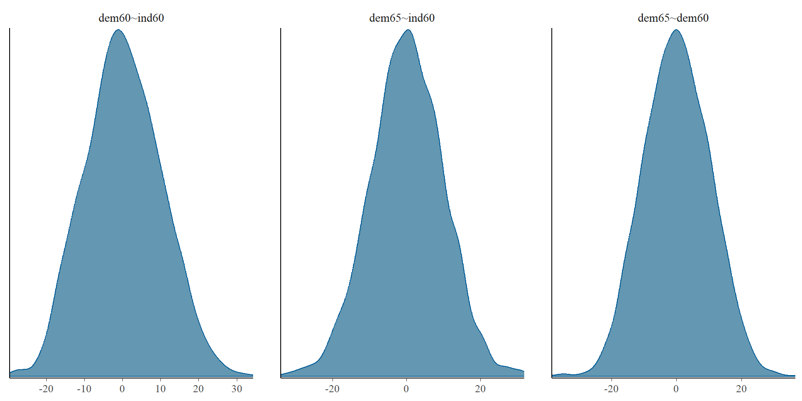
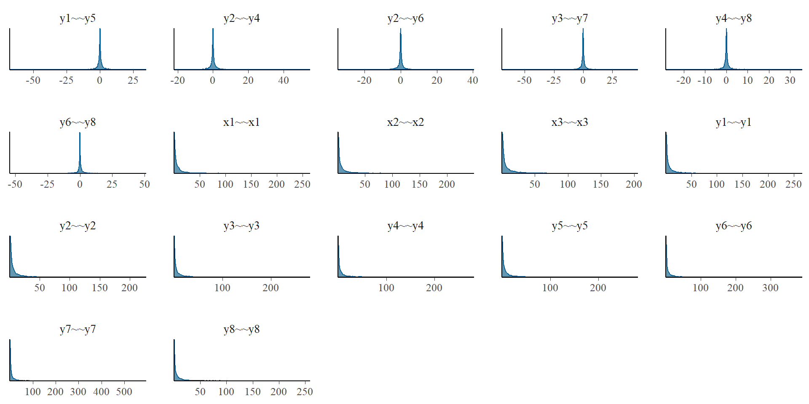
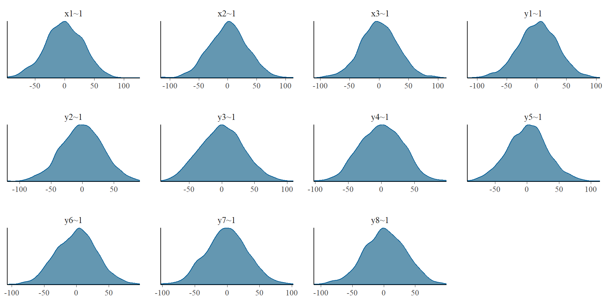
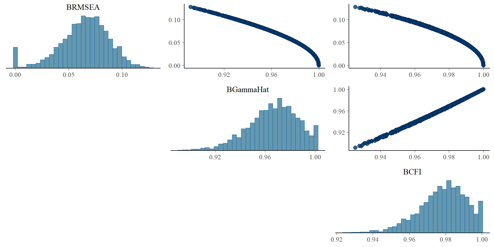

![]()
priors <- dpriors(nu="normal(3,2)",
lambda="normal(0.4, 2)",
beta="normal(0.4, 2)",
theta="gamma(1,1)[sd]")
model <- '
# latent variable definitions
ind60 =~ x1 + x2 + x3
dem60 =~ a*y1 + b*y2 + c*y3 + d*y4
dem65 =~ a*y5 + b*y6 + c*y7 + d*y8
# regressions
dem60 ~ ind60
dem65 ~ ind60 + dem60
# residual correlations
y1 ~~ y5
y2 ~~ y4 + y6
y3 ~~ y7
y4 ~~ y8
y6 ~~ y8
'
fit_wi <- bsem(model, data=PoliticalDemocracy, std.lv=T,
meanstructure=T, test = "none",
dp=priors, prisamp = T)BSEM with blavaan
April 9, 2024
Topics
- Introduction to Bayesian probability
- Evaluation of MCMC convergence and efficiency
- Priors: selection and relevance
- Prior predictive checks
- BCFA: basic measurement model
- Model fit evaluation
- Model comparison
- BSEM: basic latent regression
- Probability of direction
- Local fit
- What to report
Introduction to Bayesian probability
Bayesian Data Analysis
- Probability to describe uncertainty.
- Extends discrete logic (true/false) to continuous plausibility.
- Computationally difficult (MCMC). Wasn’t practical to use.
- Based on Pierre-Simon Laplace and Thomas Bayes. Older than frequentist.
- Used to be controversial (still?? maybe depends of the field??) .
Bayesian Data Analysis
- Frequentist view.
- Probability is just limiting frequency.
- Uncertainty arises from sampling variation.
- Bayesian view (more general).
- Probability is part of the models.
- Uncertainty is due to how much we don’t know: How much the model doesn’t know.
Logic example
- WLWWWLWLW

World
Design the model
What generates the data?
For WLWWWLWLW.
- Some true proportion of water p
- Toss globe, probability \(p\) of observing \(W\), \(1-p\) of
- Independent tosses.
Probability statement.
World
Condition on the data
- Condition the model on the data.
- Update the prior with the data \(\rightarrow\) posterior.
- The information is updated at each step, model is informed by the model characteristics and data.
Starting flat

Flat
Update
- Observe = W
Update
WLWWWLWLW
Update
Condition on data
- Tosses are independent: order of data is irrelevant.
- Every posterior is a prior for next observation.
- Every prior is a posterior of some other inference.
Evaluate the model
- Bayesian inference: logical answer to a question.
- Answers are in form of distributions.
- You guide the model.
- Was there a problem.
- Makes sense.
- Sensitivity.
Bayesian Model
- Assume:
- Likelihood.
- Parameters.
- Priors.
- Produce: Posterior.
Likelihood
- \(Pr(data|assumptions)\)
- Probability of observations conditional on assumptions/model.
- Mathematical form of how the data happens.
- In frequentist: \(Pr(data|Ho)\)
- Probability of the data if the null hypothesis is true.
- In the globe example: binomial probability:
- Probability of getting a 1 in a toss: coin, globe, etc.
Parameters
- Parameters that define the probability function of the likelihood.
- What parameters define the distribution that you specify for the data.
- Depends of the likelihood function:
- Normal: mean, sd.
- Binomial: \(p\)
Prior
- Original believe/knowledge/information for the parameters.
- Define as distribution.
- You always know “something”.
- Globe example: uniform
prior
Prior
- \(P(\theta)\) is the prior distribution represents some prior belief or information (without seeing data) about the distribution of \(\theta\) .
- By specifying a density function we expect \(\theta\) to follow, we can then estimate the form of the posterior for parameters.
Posterior and Bayes Rule/Theorem
- Bayesian estimate is a posterior distribution over parameters \(Pr(parameters|data)\).
- We can solve for the posterior distribution \(Pr(\theta|y)\), represents the probability for our parameter(\(s\)) of interest (\(\theta\)), given data (\(y\))
\[ p(\theta|y) = \frac{p(\theta,y)}{p(y)} = \frac{p(y|\theta)p(\theta)}{p(y)} \]
\[ p(\theta|y) \propto p(y|\theta)p(\theta) \]
Posterior
- We describe the distribution: point estimate, sd, intervals, etc.
- Posterior quantifies the uncertainty about \(\theta\), conditional on data.
- You decide how you describe it, what is meaningful for your research question.
p-value
- \(Pr(y|\theta) = P(y > Y|H_{0})\).
- Probability of the data coming from a population where the Null Hypothesis is TRUE.
- Probability of observing data (\(y\)) past a threshold (\(Y\)), given a null hypothesis is true.
- Major problems: 1) people misinterpret this ALL the time, 2) it is not the inference you really want.
The tyranny of the \(p\)-value
- People frequently confuse \(Pr(y > Y|H_{0})\) with \(Pr(H0|y > Y)\). If the probability of the data, given the null is true, is small, the probability that the null is true, given the data, must be small, too, right?!RIGHT?! Sadly NO.
- With the Bayes rule, we know they are only equal if the marginal probability of H0 being true is equal to the marginal probability of data being greater than or equal to the threshold.
- There is no reason to think that is the case.
Frequentists vs. Bayesians
Frequentist “What is the likelihood of observing these data, given the parameter(s) of the model?” Maximum likelihood methods basically work by iteratively finding values for q that maximize this function.
Bayesian “What is the distribution of the parameters, given the data?” A Bayesian is interested in how the parameters can be inferred from the data, not how the data would have been inferred from the parameters.
The “P” you really want to know
- We will not be rejecting any null hypotheses in here. We will make direct probabilistic inferences about the values of our parameters of interest. A Bayesian can always express the probability that (for example) a mean difference is greater than zero, if desired. But what’s almost certainly more interesting is the inference about how large the mean difference between the groups really is!
Convergence and Efficiency Evaluation
Terms
- Iterations: number of times we want the MCMC algorithm to run (estimate)
- Burnin: number of iteration to use to calibrate the model find a stable solution
- Sample: number of iterations to save after burnin, to build the posterior distributions
- Chains: number of times we estimate models N-iterations, with different starting values
- Thin: number of sample iterations to skip over (only recommended to save memory space)
Convergence
- When Bayesian models estimated with Markov-Chain Monte Carlo (MCMC) sampler, the models dont stop when it has achieve some convergence criteria, it will run as long as you set it to, and then you need to evaluate the convergence and efficiency of the estimated posterior distributions. And only analyze the results if they are stable enough.
- \(\hat{R}\) is the convergence diagnostic, which compares the between- and within-chain estimates for model parameters and other univariate quantities of interest (Vehtari et al. 2021).
- If chains have not mixed well (ie, the between- and within-chain estimates don’t agree), \(\hat{R}\) is larger than 1. We recommend running at least three chains by default and only using the sample if \(\hat{R} < 1.05\) for all the parameters.
Convergence
- If all \(\hat{R} < 1.05\) then we can establish that the MCMC chains have converged to a stable solution. If the model has not converged, you should increase the number of
burniniterations - and/or change the model priors. As the model might have failed to converge due to needing more iterations or a model misspecification (such as bad priors)
Convergence

Convergence

Efficiency
- Effective sample size (ESS) measures sampling efficiency in the distribution (related e.g. to efficiency of mean and median estimates), and is well defined even if the chains do not have finite mean or variance (Vehtari et al. 2021).
- ESS can be interpreted as the number of posterior draws that are completely independent of each other, with auto-correlations of 0
- ESS should be at least 100 (approximately) per Markov Chain in order to be reliable and indicate that estimates of respective posterior quantiles are reliable, e.g.: \(ESS > 300\) with 3 chains for every parameter
Priors: selection and relevance
Priors
- \(p(\theta)\) is the “prior distribution”
- Represents your knowledge and level of uncertainty
- Represented as probability distributions
- The inclusion of priors is a strength not a weakness.
- Bayesian inference can implement cumulative scientific progress with the inclusion of previous knowledge into the specification of the prior uncertainty
Sample size
- Frequentist statistics are asymptotically correct
- Bayesian is estimate in function the know data
- Small samples have a better representation with Bayesian statistics.
- It does not mean is perfect, you are still limited by your data
Prior: advantages
- Include prior knowledge
- Account for uncertainty
- Allow us to set clear boundaries, meaningful for the theory
- Theory driven
- Helps stabilize models with smaller sample sizes
Prior: disadvantages
- More decisions to make
- Can bias the results if they are strong in the wrong place
- Bad priors can make the model take longer to converge
- More effect with smaller sample sizes
Priors
Non informative (diffuse)
Weakly informative
Strongly informative
The different types relate to the amount of uncertainty
The recommended standard one is weakly informative
Apologetic Bayesian prefer non informative
Non informative Priors
- Intend to have large variances, implying large uncertainty
- Telling the model that you have no notion of where the parameters are located
- Try to be as similar as possible to ML, since in ML every parameter value is possible
- Even if the parameters are equal to ML, the inference is never the same
- \(p(\theta) \sim N(0, 100000)\)
- \(p(\theta) \sim U(-10000, 10000)\)
Non informative Priors
- Even as they are called “non informative”
- It is believed that if the prior tells the model that many values are possible, then it is not providing information
- Actually, it is providing a lot of information, bad information, telling the model that outlier values are possible
- Better to called them “diffuse” for the lack of clarity and quality of the information
Weakly informative Priors
- Represents a reasonable level of uncertainty
- It does not intend to drive the parameters/posterior
- Intends to set a reasonable parameter space (boundaries)
- Theory/data driven
- \(p(\theta) \sim N(0, 10)\)
- \(p(\theta) \sim U(0, 100)\)
Strongly informative Priors
- Represents a low level of uncertainty
- Usually use to present specific hypothesis
- Not recommended for general use in parameters
- \(p(\theta) \sim N(0, .05)\)
- \(p(\theta) \sim U(0, 1)\)
Priors
- Have more influence on the posterior for smaller samples
- Consider theory, data, and model characteristics
- Are scale dependent, what is a weakly informative prior in one case might be strong in another
- The “intended” priors might differ from the priors in the model due to model constraints, as opaque priors (Merkle et al. 2023)
Prior predictive checks
Prior predictive checks (PPC)
- Generate data from the priors in order to assess whether a prior is appropriate (Gabry et al. 2019).
- A posterior predictive check generates replicated data according to the posterior predictive distribution.
- In contrast, the prior predictive check generates data according to the prior predictive distribution
\(y^{sim} ∼ p(y)\)
Prior predictive checks (PPC)
- Like the posterior predictive distribution with no observed data, so that a PPC is nothing more than the limiting case of a posterior predictive check with no data.
- Simulating parameters \(θ^{sim}∼p(\theta)\) according to the priors, then simulating data \(y^{sim}∼p(y∣ \theta^{sim})\) according to the sampling distribution given the simulated parameters
- The result is a simulation from the joint distribution, \((y^{sim},θ^{sim})∼p(y,\theta)\) and thus \(y^{sim}∼p(y)\) is a simulation from the prior predictive distribution.
Prior predictive checks (PPC)
Prior predictive checks (PPC)
Prior predictive checks (PPC)

Prior predictive checks (PPC)

Prior predictive checks (PPC)

Prior predictive checks (PPC)
- Default priors
nu alpha lambda beta
"normal(0,32)" "normal(0,10)" "normal(0,10)" "normal(0,10)"
theta psi rho ibpsi
"gamma(1,.5)[sd]" "gamma(1,.5)[sd]" "beta(1,1)" "wishart(3,iden)"
tau
"normal(0,1.5)" Prior predictive checks (PPC)

Prior predictive checks (PPC)
Prior predictive checks (PPC)
Prior predictive checks (PPC)
BCFA: basic measurement model
CFA: measurement models
- A construct is what the indicators share
Bayesian CFA
For this example we will use the Industrialization and Political Democracy example (Bollen 1989)

Bayesian CFA

Measurement models
- A model is fitted to data and all models are wrong to some degree, the data may not be explained perfectly
- Interpretations must involve a subjective component and solutions will not make sense
- Model fit should be evaluated
- Tests theoretical structure
Bayesian CFA
- Basic measurement model (default priors)
mod1 <- '
# latent variable definitions
ind60 =~ x1 + x2 + x3
dem60 =~ y1 + y2 + y3 + y4
dem65 =~ y5 + y6 + y7 + y8'
f1 <- bcfa(mod1, data=PoliticalDemocracy,
meanstructure=T, std.lv=T,
burnin=1000, sample=1000, n.chains=3)
SAMPLING FOR MODEL 'stanmarg' NOW (CHAIN 1).
Chain 1:
Chain 1: Gradient evaluation took 0.00061 seconds
Chain 1: 1000 transitions using 10 leapfrog steps per transition would take 6.1 seconds.
Chain 1: Adjust your expectations accordingly!
Chain 1:
Chain 1:
Chain 1: Iteration: 1 / 2000 [ 0%] (Warmup)
Chain 1: Iteration: 200 / 2000 [ 10%] (Warmup)
Chain 1: Iteration: 400 / 2000 [ 20%] (Warmup)
Chain 1: Iteration: 600 / 2000 [ 30%] (Warmup)
Chain 1: Iteration: 800 / 2000 [ 40%] (Warmup)
Chain 1: Iteration: 1000 / 2000 [ 50%] (Warmup)
Chain 1: Iteration: 1001 / 2000 [ 50%] (Sampling)
Chain 1: Iteration: 1200 / 2000 [ 60%] (Sampling)
Chain 1: Iteration: 1400 / 2000 [ 70%] (Sampling)
Chain 1: Iteration: 1600 / 2000 [ 80%] (Sampling)
Chain 1: Iteration: 1800 / 2000 [ 90%] (Sampling)
Chain 1: Iteration: 2000 / 2000 [100%] (Sampling)
Chain 1:
Chain 1: Elapsed Time: 4.683 seconds (Warm-up)
Chain 1: 4.145 seconds (Sampling)
Chain 1: 8.828 seconds (Total)
Chain 1:
SAMPLING FOR MODEL 'stanmarg' NOW (CHAIN 2).
Chain 2:
Chain 2: Gradient evaluation took 0.000227 seconds
Chain 2: 1000 transitions using 10 leapfrog steps per transition would take 2.27 seconds.
Chain 2: Adjust your expectations accordingly!
Chain 2:
Chain 2:
Chain 2: Iteration: 1 / 2000 [ 0%] (Warmup)
Chain 2: Iteration: 200 / 2000 [ 10%] (Warmup)
Chain 2: Iteration: 400 / 2000 [ 20%] (Warmup)
Chain 2: Iteration: 600 / 2000 [ 30%] (Warmup)
Chain 2: Iteration: 800 / 2000 [ 40%] (Warmup)
Chain 2: Iteration: 1000 / 2000 [ 50%] (Warmup)
Chain 2: Iteration: 1001 / 2000 [ 50%] (Sampling)
Chain 2: Iteration: 1200 / 2000 [ 60%] (Sampling)
Chain 2: Iteration: 1400 / 2000 [ 70%] (Sampling)
Chain 2: Iteration: 1600 / 2000 [ 80%] (Sampling)
Chain 2: Iteration: 1800 / 2000 [ 90%] (Sampling)
Chain 2: Iteration: 2000 / 2000 [100%] (Sampling)
Chain 2:
Chain 2: Elapsed Time: 4.818 seconds (Warm-up)
Chain 2: 4.018 seconds (Sampling)
Chain 2: 8.836 seconds (Total)
Chain 2:
SAMPLING FOR MODEL 'stanmarg' NOW (CHAIN 3).
Chain 3:
Chain 3: Gradient evaluation took 0.000209 seconds
Chain 3: 1000 transitions using 10 leapfrog steps per transition would take 2.09 seconds.
Chain 3: Adjust your expectations accordingly!
Chain 3:
Chain 3:
Chain 3: Iteration: 1 / 2000 [ 0%] (Warmup)
Chain 3: Iteration: 200 / 2000 [ 10%] (Warmup)
Chain 3: Iteration: 400 / 2000 [ 20%] (Warmup)
Chain 3: Iteration: 600 / 2000 [ 30%] (Warmup)
Chain 3: Iteration: 800 / 2000 [ 40%] (Warmup)
Chain 3: Iteration: 1000 / 2000 [ 50%] (Warmup)
Chain 3: Iteration: 1001 / 2000 [ 50%] (Sampling)
Chain 3: Iteration: 1200 / 2000 [ 60%] (Sampling)
Chain 3: Iteration: 1400 / 2000 [ 70%] (Sampling)
Chain 3: Iteration: 1600 / 2000 [ 80%] (Sampling)
Chain 3: Iteration: 1800 / 2000 [ 90%] (Sampling)
Chain 3: Iteration: 2000 / 2000 [100%] (Sampling)
Chain 3:
Chain 3: Elapsed Time: 5.368 seconds (Warm-up)
Chain 3: 4.435 seconds (Sampling)
Chain 3: 9.803 seconds (Total)
Chain 3:
Computing post-estimation metrics (including lvs if requested)...Convergence and efficiency
- Convergence
- Efficiency
Parameter posteriors
blavaan 0.5.3 ended normally after 1000 iterations
Estimator BAYES
Optimization method MCMC
Number of model parameters 36
Number of observations 75
Statistic MargLogLik PPP
Value -1697.089 0.036
Parameter Estimates:
Latent Variables:
Estimate Post.SD pi.lower pi.upper Rhat Prior
ind60 =~
x1 0.701 0.072 0.571 0.859 1.000 normal(0,10)
x2 1.536 0.140 1.284 1.832 0.999 normal(0,10)
x3 1.273 0.139 1.012 1.552 0.999 normal(0,10)
dem60 =~
y1 2.316 0.279 1.810 2.891 1.002 normal(0,10)
y2 3.146 0.431 2.360 4.019 1.001 normal(0,10)
y3 2.429 0.369 1.728 3.182 1.002 normal(0,10)
y4 3.029 0.351 2.369 3.731 1.000 normal(0,10)
dem65 =~
y5 2.178 0.280 1.655 2.760 1.001 normal(0,10)
y6 2.775 0.364 2.107 3.553 1.001 normal(0,10)
y7 2.817 0.339 2.196 3.544 1.001 normal(0,10)
y8 2.900 0.333 2.313 3.626 1.002 normal(0,10)
Covariances:
Estimate Post.SD pi.lower pi.upper Rhat Prior
ind60 ~~
dem60 0.432 0.107 0.214 0.620 1.000 lkj_corr(1)
dem65 0.534 0.095 0.335 0.706 1.000 lkj_corr(1)
dem60 ~~
dem65 0.954 0.028 0.887 0.993 0.999 lkj_corr(1)
Intercepts:
Estimate Post.SD pi.lower pi.upper Rhat Prior
.x1 5.051 0.089 4.876 5.224 1.000 normal(0,32)
.x2 4.787 0.181 4.425 5.145 1.001 normal(0,32)
.x3 3.554 0.169 3.213 3.879 1.001 normal(0,32)
.y1 5.460 0.308 4.849 6.081 1.002 normal(0,32)
.y2 4.244 0.462 3.330 5.149 1.003 normal(0,32)
.y3 6.558 0.391 5.782 7.347 1.005 normal(0,32)
.y4 4.438 0.399 3.667 5.238 1.004 normal(0,32)
.y5 5.130 0.308 4.522 5.732 1.003 normal(0,32)
.y6 2.968 0.392 2.178 3.736 1.003 normal(0,32)
.y7 6.184 0.384 5.434 6.943 1.002 normal(0,32)
.y8 4.027 0.383 3.281 4.785 1.002 normal(0,32)
ind60 0.000
dem60 0.000
dem65 0.000
Variances:
Estimate Post.SD pi.lower pi.upper Rhat Prior
.x1 0.091 0.023 0.049 0.139 1.001 gamma(1,.5)[sd]
.x2 0.117 0.080 0.001 0.296 1.000 gamma(1,.5)[sd]
.x3 0.513 0.104 0.340 0.745 0.999 gamma(1,.5)[sd]
.y1 2.086 0.472 1.286 3.103 1.000 gamma(1,.5)[sd]
.y2 6.821 1.312 4.659 9.900 1.000 gamma(1,.5)[sd]
.y3 5.595 1.048 3.828 7.898 1.000 gamma(1,.5)[sd]
.y4 2.964 0.719 1.754 4.529 1.001 gamma(1,.5)[sd]
.y5 2.595 0.527 1.724 3.765 1.000 gamma(1,.5)[sd]
.y6 4.491 0.866 3.032 6.404 1.000 gamma(1,.5)[sd]
.y7 3.696 0.746 2.429 5.373 1.000 gamma(1,.5)[sd]
.y8 2.991 0.667 1.839 4.484 1.000 gamma(1,.5)[sd]
ind60 1.000
dem60 1.000
dem65 1.000
R-Square:
Estimate
x1 0.844
x2 0.953
x3 0.759
y1 0.720
y2 0.592
y3 0.513
y4 0.756
y5 0.646
y6 0.632
y7 0.682
y8 0.738Bayesian CFA
- Basic measurement model (weakly informative priors)
priors <- dpriors(nu="normal(3,2)",
lambda="normal(1, 3)",
theta="gamma(1,1)[sd]")
mod1 <- '
# latent variable definitions
ind60 =~ x1 + x2 + x3
dem60 =~ y1 + y2 + y3 + y4
dem65 =~ y5 + y6 + y7 + y8'
f2 <- bcfa(mod1, data=PoliticalDemocracy,
meanstructure=T, std.lv=T, dp=priors,
burnin=1000, sample=1000, n.chains=3)
SAMPLING FOR MODEL 'stanmarg' NOW (CHAIN 1).
Chain 1:
Chain 1: Gradient evaluation took 0.000208 seconds
Chain 1: 1000 transitions using 10 leapfrog steps per transition would take 2.08 seconds.
Chain 1: Adjust your expectations accordingly!
Chain 1:
Chain 1:
Chain 1: Iteration: 1 / 2000 [ 0%] (Warmup)
Chain 1: Iteration: 200 / 2000 [ 10%] (Warmup)
Chain 1: Iteration: 400 / 2000 [ 20%] (Warmup)
Chain 1: Iteration: 600 / 2000 [ 30%] (Warmup)
Chain 1: Iteration: 800 / 2000 [ 40%] (Warmup)
Chain 1: Iteration: 1000 / 2000 [ 50%] (Warmup)
Chain 1: Iteration: 1001 / 2000 [ 50%] (Sampling)
Chain 1: Iteration: 1200 / 2000 [ 60%] (Sampling)
Chain 1: Iteration: 1400 / 2000 [ 70%] (Sampling)
Chain 1: Iteration: 1600 / 2000 [ 80%] (Sampling)
Chain 1: Iteration: 1800 / 2000 [ 90%] (Sampling)
Chain 1: Iteration: 2000 / 2000 [100%] (Sampling)
Chain 1:
Chain 1: Elapsed Time: 5.153 seconds (Warm-up)
Chain 1: 3.813 seconds (Sampling)
Chain 1: 8.966 seconds (Total)
Chain 1:
SAMPLING FOR MODEL 'stanmarg' NOW (CHAIN 2).
Chain 2:
Chain 2: Gradient evaluation took 0.000229 seconds
Chain 2: 1000 transitions using 10 leapfrog steps per transition would take 2.29 seconds.
Chain 2: Adjust your expectations accordingly!
Chain 2:
Chain 2:
Chain 2: Iteration: 1 / 2000 [ 0%] (Warmup)
Chain 2: Iteration: 200 / 2000 [ 10%] (Warmup)
Chain 2: Iteration: 400 / 2000 [ 20%] (Warmup)
Chain 2: Iteration: 600 / 2000 [ 30%] (Warmup)
Chain 2: Iteration: 800 / 2000 [ 40%] (Warmup)
Chain 2: Iteration: 1000 / 2000 [ 50%] (Warmup)
Chain 2: Iteration: 1001 / 2000 [ 50%] (Sampling)
Chain 2: Iteration: 1200 / 2000 [ 60%] (Sampling)
Chain 2: Iteration: 1400 / 2000 [ 70%] (Sampling)
Chain 2: Iteration: 1600 / 2000 [ 80%] (Sampling)
Chain 2: Iteration: 1800 / 2000 [ 90%] (Sampling)
Chain 2: Iteration: 2000 / 2000 [100%] (Sampling)
Chain 2:
Chain 2: Elapsed Time: 4.633 seconds (Warm-up)
Chain 2: 3.744 seconds (Sampling)
Chain 2: 8.377 seconds (Total)
Chain 2:
SAMPLING FOR MODEL 'stanmarg' NOW (CHAIN 3).
Chain 3:
Chain 3: Gradient evaluation took 0.000211 seconds
Chain 3: 1000 transitions using 10 leapfrog steps per transition would take 2.11 seconds.
Chain 3: Adjust your expectations accordingly!
Chain 3:
Chain 3:
Chain 3: Iteration: 1 / 2000 [ 0%] (Warmup)
Chain 3: Iteration: 200 / 2000 [ 10%] (Warmup)
Chain 3: Iteration: 400 / 2000 [ 20%] (Warmup)
Chain 3: Iteration: 600 / 2000 [ 30%] (Warmup)
Chain 3: Iteration: 800 / 2000 [ 40%] (Warmup)
Chain 3: Iteration: 1000 / 2000 [ 50%] (Warmup)
Chain 3: Iteration: 1001 / 2000 [ 50%] (Sampling)
Chain 3: Iteration: 1200 / 2000 [ 60%] (Sampling)
Chain 3: Iteration: 1400 / 2000 [ 70%] (Sampling)
Chain 3: Iteration: 1600 / 2000 [ 80%] (Sampling)
Chain 3: Iteration: 1800 / 2000 [ 90%] (Sampling)
Chain 3: Iteration: 2000 / 2000 [100%] (Sampling)
Chain 3:
Chain 3: Elapsed Time: 4.613 seconds (Warm-up)
Chain 3: 4.754 seconds (Sampling)
Chain 3: 9.367 seconds (Total)
Chain 3:
Computing post-estimation metrics (including lvs if requested)...Convergence and efficiency
- Convergence
- Efficiency
Parameter posteriors
blavaan 0.5.3 ended normally after 1000 iterations
Estimator BAYES
Optimization method MCMC
Number of model parameters 36
Number of observations 75
Statistic MargLogLik PPP
Value -1667.792 0.040
Parameter Estimates:
Latent Variables:
Estimate Post.SD pi.lower pi.upper Rhat Prior
ind60 =~
x1 0.698 0.070 0.572 0.844 1.000 normal(1, 3)
x2 1.532 0.137 1.291 1.824 1.000 normal(1, 3)
x3 1.265 0.141 1.003 1.552 0.999 normal(1, 3)
dem60 =~
y1 2.266 0.260 1.798 2.810 0.999 normal(1, 3)
y2 3.060 0.398 2.298 3.871 1.000 normal(1, 3)
y3 2.379 0.353 1.713 3.079 1.000 normal(1, 3)
y4 2.964 0.317 2.384 3.639 1.000 normal(1, 3)
dem65 =~
y5 2.133 0.263 1.663 2.696 1.000 normal(1, 3)
y6 2.715 0.342 2.082 3.385 1.002 normal(1, 3)
y7 2.754 0.325 2.150 3.421 1.002 normal(1, 3)
y8 2.836 0.312 2.280 3.488 1.001 normal(1, 3)
Covariances:
Estimate Post.SD pi.lower pi.upper Rhat Prior
ind60 ~~
dem60 0.426 0.105 0.209 0.616 1.002 lkj_corr(1)
dem65 0.531 0.094 0.335 0.695 1.001 lkj_corr(1)
dem60 ~~
dem65 0.952 0.030 0.879 0.993 1.002 lkj_corr(1)
Intercepts:
Estimate Post.SD pi.lower pi.upper Rhat Prior
.x1 5.011 0.088 4.848 5.184 1.000 normal(3,2)
.x2 4.697 0.178 4.361 5.045 1.001 normal(3,2)
.x3 3.479 0.167 3.161 3.821 1.001 normal(3,2)
.y1 5.191 0.293 4.610 5.764 1.001 normal(3,2)
.y2 3.888 0.431 3.056 4.731 1.000 normal(3,2)
.y3 6.230 0.377 5.493 6.979 1.000 normal(3,2)
.y4 4.102 0.375 3.330 4.811 1.001 normal(3,2)
.y5 4.872 0.290 4.271 5.419 1.001 normal(3,2)
.y6 2.666 0.370 1.916 3.399 1.001 normal(3,2)
.y7 5.843 0.364 5.143 6.546 1.001 normal(3,2)
.y8 3.708 0.360 3.011 4.419 1.001 normal(3,2)
ind60 0.000
dem60 0.000
dem65 0.000
Variances:
Estimate Post.SD pi.lower pi.upper Rhat Prior
.x1 0.091 0.022 0.051 0.137 1.000 gamma(1,1)[sd]
.x2 0.112 0.077 0.001 0.283 1.001 gamma(1,1)[sd]
.x3 0.513 0.103 0.341 0.736 0.999 gamma(1,1)[sd]
.y1 2.072 0.461 1.306 3.083 1.000 gamma(1,1)[sd]
.y2 6.683 1.267 4.607 9.485 1.000 gamma(1,1)[sd]
.y3 5.514 1.014 3.835 7.789 1.001 gamma(1,1)[sd]
.y4 2.915 0.686 1.805 4.420 1.000 gamma(1,1)[sd]
.y5 2.560 0.503 1.743 3.671 1.000 gamma(1,1)[sd]
.y6 4.430 0.840 3.003 6.271 1.000 gamma(1,1)[sd]
.y7 3.646 0.746 2.416 5.330 0.999 gamma(1,1)[sd]
.y8 2.956 0.646 1.871 4.453 1.000 gamma(1,1)[sd]
ind60 1.000
dem60 1.000
dem65 1.000
R-Square:
Estimate
x1 0.842
x2 0.955
x3 0.757
y1 0.713
y2 0.584
y3 0.507
y4 0.751
y5 0.640
y6 0.625
y7 0.675
y8 0.731Cross time residuals
mod3 <- '
# latent variable definitions
ind60 =~ x1 + x2 + x3
dem60 =~ y1 + y2 + y3 + y4
dem65 =~ y5 + y6 + y7 + y8
# residual correlations
y1 ~~ y5
y2 ~~ y6
y3 ~~ y7
y4 ~~ y8
'
f3 <- bcfa(mod3, data=PoliticalDemocracy,
meanstructure=T, std.lv=T, dp=priors,
burnin=1000, sample=1000, n.chains=3)
SAMPLING FOR MODEL 'stanmarg' NOW (CHAIN 1).
Chain 1:
Chain 1: Gradient evaluation took 0.000207 seconds
Chain 1: 1000 transitions using 10 leapfrog steps per transition would take 2.07 seconds.
Chain 1: Adjust your expectations accordingly!
Chain 1:
Chain 1:
Chain 1: Iteration: 1 / 2000 [ 0%] (Warmup)
Chain 1: Iteration: 200 / 2000 [ 10%] (Warmup)
Chain 1: Iteration: 400 / 2000 [ 20%] (Warmup)
Chain 1: Iteration: 600 / 2000 [ 30%] (Warmup)
Chain 1: Iteration: 800 / 2000 [ 40%] (Warmup)
Chain 1: Iteration: 1000 / 2000 [ 50%] (Warmup)
Chain 1: Iteration: 1001 / 2000 [ 50%] (Sampling)
Chain 1: Iteration: 1200 / 2000 [ 60%] (Sampling)
Chain 1: Iteration: 1400 / 2000 [ 70%] (Sampling)
Chain 1: Iteration: 1600 / 2000 [ 80%] (Sampling)
Chain 1: Iteration: 1800 / 2000 [ 90%] (Sampling)
Chain 1: Iteration: 2000 / 2000 [100%] (Sampling)
Chain 1:
Chain 1: Elapsed Time: 4.635 seconds (Warm-up)
Chain 1: 4.184 seconds (Sampling)
Chain 1: 8.819 seconds (Total)
Chain 1:
SAMPLING FOR MODEL 'stanmarg' NOW (CHAIN 2).
Chain 2:
Chain 2: Gradient evaluation took 0.000226 seconds
Chain 2: 1000 transitions using 10 leapfrog steps per transition would take 2.26 seconds.
Chain 2: Adjust your expectations accordingly!
Chain 2:
Chain 2:
Chain 2: Iteration: 1 / 2000 [ 0%] (Warmup)
Chain 2: Iteration: 200 / 2000 [ 10%] (Warmup)
Chain 2: Iteration: 400 / 2000 [ 20%] (Warmup)
Chain 2: Iteration: 600 / 2000 [ 30%] (Warmup)
Chain 2: Iteration: 800 / 2000 [ 40%] (Warmup)
Chain 2: Iteration: 1000 / 2000 [ 50%] (Warmup)
Chain 2: Iteration: 1001 / 2000 [ 50%] (Sampling)
Chain 2: Iteration: 1200 / 2000 [ 60%] (Sampling)
Chain 2: Iteration: 1400 / 2000 [ 70%] (Sampling)
Chain 2: Iteration: 1600 / 2000 [ 80%] (Sampling)
Chain 2: Iteration: 1800 / 2000 [ 90%] (Sampling)
Chain 2: Iteration: 2000 / 2000 [100%] (Sampling)
Chain 2:
Chain 2: Elapsed Time: 5.383 seconds (Warm-up)
Chain 2: 4.361 seconds (Sampling)
Chain 2: 9.744 seconds (Total)
Chain 2:
SAMPLING FOR MODEL 'stanmarg' NOW (CHAIN 3).
Chain 3:
Chain 3: Gradient evaluation took 0.000298 seconds
Chain 3: 1000 transitions using 10 leapfrog steps per transition would take 2.98 seconds.
Chain 3: Adjust your expectations accordingly!
Chain 3:
Chain 3:
Chain 3: Iteration: 1 / 2000 [ 0%] (Warmup)
Chain 3: Iteration: 200 / 2000 [ 10%] (Warmup)
Chain 3: Iteration: 400 / 2000 [ 20%] (Warmup)
Chain 3: Iteration: 600 / 2000 [ 30%] (Warmup)
Chain 3: Iteration: 800 / 2000 [ 40%] (Warmup)
Chain 3: Iteration: 1000 / 2000 [ 50%] (Warmup)
Chain 3: Iteration: 1001 / 2000 [ 50%] (Sampling)
Chain 3: Iteration: 1200 / 2000 [ 60%] (Sampling)
Chain 3: Iteration: 1400 / 2000 [ 70%] (Sampling)
Chain 3: Iteration: 1600 / 2000 [ 80%] (Sampling)
Chain 3: Iteration: 1800 / 2000 [ 90%] (Sampling)
Chain 3: Iteration: 2000 / 2000 [100%] (Sampling)
Chain 3:
Chain 3: Elapsed Time: 4.908 seconds (Warm-up)
Chain 3: 4.705 seconds (Sampling)
Chain 3: 9.613 seconds (Total)
Chain 3:
Computing post-estimation metrics (including lvs if requested)...Convergence and efficiency
- Convergence
- Efficiency
Parameter posteriors
blavaan 0.5.3 ended normally after 1000 iterations
Estimator BAYES
Optimization method MCMC
Number of model parameters 40
Number of observations 75
Statistic MargLogLik PPP
Value NA 0.243
Parameter Estimates:
Latent Variables:
Estimate Post.SD pi.lower pi.upper Std.lv Std.all
ind60 =~
x1 0.698 0.070 0.571 0.851 0.698 0.917
x2 1.536 0.139 1.286 1.829 1.536 0.978
x3 1.269 0.139 1.013 1.557 1.269 0.872
dem60 =~
y1 2.211 0.281 1.674 2.786 2.211 0.823
y2 3.054 0.417 2.298 3.905 3.054 0.761
y3 2.331 0.361 1.669 3.087 2.331 0.698
y4 3.055 0.343 2.424 3.767 3.055 0.884
dem65 =~
y5 2.072 0.279 1.561 2.663 2.072 0.775
y6 2.727 0.358 2.068 3.465 2.727 0.791
y7 2.764 0.336 2.168 3.466 2.764 0.819
y8 2.910 0.329 2.329 3.594 2.910 0.873
Rhat Prior
1.000 normal(1, 3)
1.001 normal(1, 3)
1.000 normal(1, 3)
1.001 normal(1, 3)
1.000 normal(1, 3)
1.000 normal(1, 3)
1.001 normal(1, 3)
1.000 normal(1, 3)
1.000 normal(1, 3)
1.000 normal(1, 3)
1.001 normal(1, 3)
Covariances:
Estimate Post.SD pi.lower pi.upper Std.lv Std.all
.y1 ~~
.y5 0.914 0.414 0.185 1.812 0.914 0.354
.y2 ~~
.y6 1.909 0.788 0.506 3.559 1.909 0.348
.y3 ~~
.y7 1.300 0.670 0.083 2.716 1.300 0.280
.y4 ~~
.y8 0.189 0.519 -0.761 1.255 0.189 0.072
ind60 ~~
dem60 0.425 0.106 0.209 0.616 0.425 0.425
dem65 0.533 0.093 0.331 0.695 0.533 0.533
dem60 ~~
dem65 0.927 0.032 0.852 0.978 0.927 0.927
Rhat Prior
1.000 beta(1,1)
1.000 beta(1,1)
0.999 beta(1,1)
1.000 beta(1,1)
1.001 lkj_corr(1)
1.002 lkj_corr(1)
1.000 lkj_corr(1)
Intercepts:
Estimate Post.SD pi.lower pi.upper Std.lv Std.all
.x1 5.010 0.087 4.838 5.179 5.010 6.584
.x2 4.695 0.181 4.353 5.055 4.695 2.989
.x3 3.479 0.167 3.156 3.806 3.479 2.390
.y1 5.207 0.293 4.629 5.771 5.207 1.938
.y2 3.914 0.436 3.045 4.747 3.914 0.976
.y3 6.245 0.359 5.535 6.932 6.245 1.869
.y4 4.127 0.371 3.404 4.863 4.127 1.194
.y5 4.888 0.293 4.312 5.466 4.888 1.829
.y6 2.688 0.376 1.961 3.419 2.688 0.779
.y7 5.850 0.370 5.120 6.577 5.850 1.733
.y8 3.726 0.358 3.047 4.422 3.726 1.117
ind60 0.000 0.000 0.000
dem60 0.000 0.000 0.000
dem65 0.000 0.000 0.000
Rhat Prior
1.002 normal(3,2)
1.002 normal(3,2)
1.002 normal(3,2)
1.000 normal(3,2)
1.001 normal(3,2)
1.000 normal(3,2)
1.001 normal(3,2)
1.000 normal(3,2)
1.002 normal(3,2)
1.001 normal(3,2)
1.001 normal(3,2)
Variances:
Estimate Post.SD pi.lower pi.upper Std.lv Std.all
.x1 0.092 0.022 0.052 0.139 0.092 0.159
.x2 0.109 0.077 0.001 0.279 0.109 0.044
.x3 0.509 0.099 0.346 0.730 0.509 0.240
.y1 2.335 0.541 1.391 3.530 2.335 0.323
.y2 6.756 1.302 4.574 9.628 6.756 0.420
.y3 5.731 1.060 3.961 8.067 5.731 0.513
.y4 2.605 0.788 1.217 4.321 2.605 0.218
.y5 2.850 0.598 1.835 4.178 2.850 0.399
.y6 4.463 0.909 2.979 6.576 4.463 0.375
.y7 3.752 0.781 2.437 5.496 3.752 0.329
.y8 2.653 0.702 1.399 4.159 2.653 0.239
ind60 1.000 1.000 1.000
dem60 1.000 1.000 1.000
dem65 1.000 1.000 1.000
Rhat Prior
1.001 gamma(1,1)[sd]
1.001 gamma(1,1)[sd]
1.000 gamma(1,1)[sd]
1.000 gamma(1,1)[sd]
1.001 gamma(1,1)[sd]
1.000 gamma(1,1)[sd]
1.000 gamma(1,1)[sd]
1.000 gamma(1,1)[sd]
0.999 gamma(1,1)[sd]
1.000 gamma(1,1)[sd]
1.000 gamma(1,1)[sd]
R-Square:
Estimate
x1 0.841
x2 0.956
x3 0.760
y1 0.677
y2 0.580
y3 0.487
y4 0.782
y5 0.601
y6 0.625
y7 0.671
y8 0.761Cross time factor loadings
mod4 <- '
# latent variable definitions
ind60 =~ x1 + x2 + x3
dem60 =~ a*y1 + b*y2 + c*y3 + d*y4
dem65 =~ a*y5 + b*y6 + c*y7 + d*y8
# residual correlations
y1 ~~ y5
y2 ~~ y6
y3 ~~ y7
y4 ~~ y8
'
f4 <- bcfa(mod4, data=PoliticalDemocracy,
meanstructure=T, std.lv=T, dp=priors,
burnin=1000, sample=1000, n.chains=3)
SAMPLING FOR MODEL 'stanmarg' NOW (CHAIN 1).
Chain 1:
Chain 1: Gradient evaluation took 0.000232 seconds
Chain 1: 1000 transitions using 10 leapfrog steps per transition would take 2.32 seconds.
Chain 1: Adjust your expectations accordingly!
Chain 1:
Chain 1:
Chain 1: Iteration: 1 / 2000 [ 0%] (Warmup)
Chain 1: Iteration: 200 / 2000 [ 10%] (Warmup)
Chain 1: Iteration: 400 / 2000 [ 20%] (Warmup)
Chain 1: Iteration: 600 / 2000 [ 30%] (Warmup)
Chain 1: Iteration: 800 / 2000 [ 40%] (Warmup)
Chain 1: Iteration: 1000 / 2000 [ 50%] (Warmup)
Chain 1: Iteration: 1001 / 2000 [ 50%] (Sampling)
Chain 1: Iteration: 1200 / 2000 [ 60%] (Sampling)
Chain 1: Iteration: 1400 / 2000 [ 70%] (Sampling)
Chain 1: Iteration: 1600 / 2000 [ 80%] (Sampling)
Chain 1: Iteration: 1800 / 2000 [ 90%] (Sampling)
Chain 1: Iteration: 2000 / 2000 [100%] (Sampling)
Chain 1:
Chain 1: Elapsed Time: 4.498 seconds (Warm-up)
Chain 1: 4.193 seconds (Sampling)
Chain 1: 8.691 seconds (Total)
Chain 1:
SAMPLING FOR MODEL 'stanmarg' NOW (CHAIN 2).
Chain 2:
Chain 2: Gradient evaluation took 0.000215 seconds
Chain 2: 1000 transitions using 10 leapfrog steps per transition would take 2.15 seconds.
Chain 2: Adjust your expectations accordingly!
Chain 2:
Chain 2:
Chain 2: Iteration: 1 / 2000 [ 0%] (Warmup)
Chain 2: Iteration: 200 / 2000 [ 10%] (Warmup)
Chain 2: Iteration: 400 / 2000 [ 20%] (Warmup)
Chain 2: Iteration: 600 / 2000 [ 30%] (Warmup)
Chain 2: Iteration: 800 / 2000 [ 40%] (Warmup)
Chain 2: Iteration: 1000 / 2000 [ 50%] (Warmup)
Chain 2: Iteration: 1001 / 2000 [ 50%] (Sampling)
Chain 2: Iteration: 1200 / 2000 [ 60%] (Sampling)
Chain 2: Iteration: 1400 / 2000 [ 70%] (Sampling)
Chain 2: Iteration: 1600 / 2000 [ 80%] (Sampling)
Chain 2: Iteration: 1800 / 2000 [ 90%] (Sampling)
Chain 2: Iteration: 2000 / 2000 [100%] (Sampling)
Chain 2:
Chain 2: Elapsed Time: 5.401 seconds (Warm-up)
Chain 2: 4.127 seconds (Sampling)
Chain 2: 9.528 seconds (Total)
Chain 2:
SAMPLING FOR MODEL 'stanmarg' NOW (CHAIN 3).
Chain 3:
Chain 3: Gradient evaluation took 0.000235 seconds
Chain 3: 1000 transitions using 10 leapfrog steps per transition would take 2.35 seconds.
Chain 3: Adjust your expectations accordingly!
Chain 3:
Chain 3:
Chain 3: Iteration: 1 / 2000 [ 0%] (Warmup)
Chain 3: Iteration: 200 / 2000 [ 10%] (Warmup)
Chain 3: Iteration: 400 / 2000 [ 20%] (Warmup)
Chain 3: Iteration: 600 / 2000 [ 30%] (Warmup)
Chain 3: Iteration: 800 / 2000 [ 40%] (Warmup)
Chain 3: Iteration: 1000 / 2000 [ 50%] (Warmup)
Chain 3: Iteration: 1001 / 2000 [ 50%] (Sampling)
Chain 3: Iteration: 1200 / 2000 [ 60%] (Sampling)
Chain 3: Iteration: 1400 / 2000 [ 70%] (Sampling)
Chain 3: Iteration: 1600 / 2000 [ 80%] (Sampling)
Chain 3: Iteration: 1800 / 2000 [ 90%] (Sampling)
Chain 3: Iteration: 2000 / 2000 [100%] (Sampling)
Chain 3:
Chain 3: Elapsed Time: 4.529 seconds (Warm-up)
Chain 3: 4.198 seconds (Sampling)
Chain 3: 8.727 seconds (Total)
Chain 3:
Computing post-estimation metrics (including lvs if requested)...Convergence and efficiency
- Convergence
- Efficiency
Parameter posteriors
blavaan 0.5.3 ended normally after 1000 iterations
Estimator BAYES
Optimization method MCMC
Number of model parameters 40
Number of equality constraints 4
Number of observations 75
Statistic MargLogLik PPP
Value NA 0.271
Parameter Estimates:
Latent Variables:
Estimate Post.SD pi.lower pi.upper Std.lv Std.all
ind60 =~
x1 0.700 0.070 0.574 0.850 0.700 0.918
x2 1.536 0.140 1.281 1.840 1.536 0.977
x3 1.269 0.140 1.015 1.554 1.269 0.871
dem60 =~
y1 (a) 2.135 0.245 1.691 2.659 2.135 0.816
y2 (b) 2.815 0.329 2.212 3.519 2.815 0.730
y3 (c) 2.585 0.304 2.042 3.246 2.585 0.737
y4 (d) 2.952 0.286 2.430 3.549 2.952 0.875
dem65 =~
y5 (a) 2.135 0.245 1.691 2.659 2.135 0.787
y6 (b) 2.815 0.329 2.212 3.519 2.815 0.802
y7 (c) 2.585 0.304 2.042 3.246 2.585 0.795
y8 (d) 2.952 0.286 2.430 3.549 2.952 0.878
Rhat Prior
1.000 normal(1, 3)
1.000 normal(1, 3)
1.000 normal(1, 3)
1.000 normal(1, 3)
1.000 normal(1, 3)
1.000 normal(1, 3)
1.000 normal(1, 3)
1.000
1.000
1.000
1.000
Covariances:
Estimate Post.SD pi.lower pi.upper Std.lv Std.all
.y1 ~~
.y5 0.886 0.414 0.157 1.780 0.886 0.350
.y2 ~~
.y6 1.996 0.807 0.586 3.781 1.996 0.361
.y3 ~~
.y7 1.233 0.665 0.037 2.700 1.233 0.264
.y4 ~~
.y8 0.202 0.533 -0.776 1.311 0.202 0.077
ind60 ~~
dem60 0.435 0.101 0.230 0.619 0.435 0.435
dem65 0.541 0.092 0.337 0.699 0.541 0.541
dem60 ~~
dem65 0.927 0.032 0.854 0.978 0.927 0.927
Rhat Prior
1.000 beta(1,1)
1.000 beta(1,1)
1.002 beta(1,1)
0.999 beta(1,1)
1.000 lkj_corr(1)
1.000 lkj_corr(1)
1.000 lkj_corr(1)
Intercepts:
Estimate Post.SD pi.lower pi.upper Std.lv Std.all
.x1 5.007 0.086 4.833 5.179 5.007 6.567
.x2 4.687 0.179 4.318 5.030 4.687 2.981
.x3 3.467 0.167 3.137 3.800 3.467 2.379
.y1 5.203 0.290 4.615 5.757 5.203 1.988
.y2 3.927 0.422 3.093 4.764 3.927 1.018
.y3 6.199 0.390 5.411 6.942 6.199 1.768
.y4 4.106 0.373 3.363 4.819 4.106 1.218
.y5 4.869 0.299 4.272 5.459 4.869 1.794
.y6 2.660 0.378 1.908 3.384 2.660 0.758
.y7 5.852 0.355 5.156 6.500 5.852 1.801
.y8 3.698 0.360 2.978 4.377 3.698 1.100
ind60 0.000 0.000 0.000
dem60 0.000 0.000 0.000
dem65 0.000 0.000 0.000
Rhat Prior
1.000 normal(3,2)
1.000 normal(3,2)
1.000 normal(3,2)
1.002 normal(3,2)
1.003 normal(3,2)
1.002 normal(3,2)
1.002 normal(3,2)
1.002 normal(3,2)
1.004 normal(3,2)
1.004 normal(3,2)
1.003 normal(3,2)
Variances:
Estimate Post.SD pi.lower pi.upper Std.lv Std.all
.x1 0.092 0.022 0.053 0.139 0.092 0.157
.x2 0.114 0.076 0.002 0.284 0.114 0.046
.x3 0.514 0.102 0.347 0.748 0.514 0.242
.y1 2.288 0.537 1.383 3.508 2.288 0.334
.y2 6.953 1.305 4.772 9.872 6.953 0.467
.y3 5.604 1.104 3.843 8.115 5.604 0.456
.y4 2.660 0.777 1.315 4.324 2.660 0.234
.y5 2.808 0.581 1.870 4.123 2.808 0.381
.y6 4.403 0.860 2.911 6.312 4.403 0.357
.y7 3.880 0.788 2.562 5.647 3.880 0.367
.y8 2.594 0.679 1.436 4.075 2.594 0.229
ind60 1.000 1.000 1.000
dem60 1.000 1.000 1.000
dem65 1.000 1.000 1.000
Rhat Prior
1.000 gamma(1,1)[sd]
1.002 gamma(1,1)[sd]
0.999 gamma(1,1)[sd]
0.999 gamma(1,1)[sd]
0.999 gamma(1,1)[sd]
1.000 gamma(1,1)[sd]
1.000 gamma(1,1)[sd]
0.999 gamma(1,1)[sd]
1.000 gamma(1,1)[sd]
1.000 gamma(1,1)[sd]
1.000 gamma(1,1)[sd]
R-Square:
Estimate
x1 0.843
x2 0.954
x3 0.758
y1 0.666
y2 0.533
y3 0.544
y4 0.766
y5 0.619
y6 0.643
y7 0.633
y8 0.771Model fit evaluation
Model fit
“With respect to model fit, researchers do not seem adequately sensitive to the fundamental reality that there is no true model…, that all models are wrong to some degree, even in the population, and that the best one can hope for is to identify a parsimonious, substantively meaningful model that fits observed data adequately well. At the same time, one must recognize that there may well be other models that fit the data to approximately the same degree… It is clear that a finding of good fit does not imply that a model is correct or true, but only plausible” - MacCallum & Austin, 2000
Posterior predictive \(p\)-value
- Measure of the model’s absolute fit
- Compares observed likelihood ratio test statistics to likelihood ratio test statistics generated from the model’s posterior predictive distribution.
- Compute the observed LRT statistic
- Generate artificial data from the model
- Compute the posterior predictive LRT of the artificial data
- Record which LRT is higher
- The \(PPP\) is the proportion of times the posterior LRT is larger.
- Perfect fit is 0.5
Posterior predictive \(p\)-value
- In practice behaves similar to the \(\chi^2\) \(p\)-value in frequentist SEM
- As sample size increases will reject models for small deviations
- Not recommended to use as general practice
Overall model fit (approximate indices)
- One of the first steps is to evaluate the model’s global fit
- Commonly done by presenting multiple fit indices, with some of the most common being based on the model’s \(\chi^2\).
- We have developed Bayesian versions of these indices (Garnier-Villarreal and Jorgensen 2020) that can be computed with
blavaan
Noncentrality-Based Fit Indices
- This group of indices compares the hypothesized model against the perfect saturated model.
- It specifically uses the noncentrality parameter \(\hat{\lambda} = \chi^2 - df\), with the \(df\) being adjusted by different model/data characteristics.
- Indices include Root Mean Square Error of approximation (RMSEA), McDonald’s centrality index (Mc), gamma-hat (\(\hat{\Gamma}\)), and adjusted gamma-hat (\(\hat{\Gamma}_{adj}\)).
Incremental Fit Indices
- Compares the hypothesized model with the worst possible model, so they are called incremental indices.
- Comparing your model’s \(\chi^2_H\) to the null model’s \(\chi^2_0\) in different ways.
- Including the Comparative Fit Index (CFI), Tucker-Lewis Index (TLI), and Normed Fit Index (NFI).
Model fit in blavaan
- We can directly calculate the noncentrality fit indices
- To estimate the incremental indices we need to estimate the null model for comparison
Null model
- Standard null model: only estimate variances and means of the indicators
HS.model_null <- '
x1 ~~ x1
x2 ~~ x2
x3 ~~ x3
y1 ~~ y1
y2 ~~ y2
y3 ~~ y3
y4 ~~ y4
y5 ~~ y5
y6 ~~ y6
y7 ~~ y7
y8 ~~ y8'
fit_null <- bcfa(HS.model_null,
data=PoliticalDemocracy,
meanstructure=T)
SAMPLING FOR MODEL 'stanmarg' NOW (CHAIN 1).
Chain 1:
Chain 1: Gradient evaluation took 0.000168 seconds
Chain 1: 1000 transitions using 10 leapfrog steps per transition would take 1.68 seconds.
Chain 1: Adjust your expectations accordingly!
Chain 1:
Chain 1:
Chain 1: Iteration: 1 / 1500 [ 0%] (Warmup)
Chain 1: Iteration: 150 / 1500 [ 10%] (Warmup)
Chain 1: Iteration: 300 / 1500 [ 20%] (Warmup)
Chain 1: Iteration: 450 / 1500 [ 30%] (Warmup)
Chain 1: Iteration: 501 / 1500 [ 33%] (Sampling)
Chain 1: Iteration: 650 / 1500 [ 43%] (Sampling)
Chain 1: Iteration: 800 / 1500 [ 53%] (Sampling)
Chain 1: Iteration: 950 / 1500 [ 63%] (Sampling)
Chain 1: Iteration: 1100 / 1500 [ 73%] (Sampling)
Chain 1: Iteration: 1250 / 1500 [ 83%] (Sampling)
Chain 1: Iteration: 1400 / 1500 [ 93%] (Sampling)
Chain 1: Iteration: 1500 / 1500 [100%] (Sampling)
Chain 1:
Chain 1: Elapsed Time: 1.139 seconds (Warm-up)
Chain 1: 1.526 seconds (Sampling)
Chain 1: 2.665 seconds (Total)
Chain 1:
SAMPLING FOR MODEL 'stanmarg' NOW (CHAIN 2).
Chain 2:
Chain 2: Gradient evaluation took 0.000173 seconds
Chain 2: 1000 transitions using 10 leapfrog steps per transition would take 1.73 seconds.
Chain 2: Adjust your expectations accordingly!
Chain 2:
Chain 2:
Chain 2: Iteration: 1 / 1500 [ 0%] (Warmup)
Chain 2: Iteration: 150 / 1500 [ 10%] (Warmup)
Chain 2: Iteration: 300 / 1500 [ 20%] (Warmup)
Chain 2: Iteration: 450 / 1500 [ 30%] (Warmup)
Chain 2: Iteration: 501 / 1500 [ 33%] (Sampling)
Chain 2: Iteration: 650 / 1500 [ 43%] (Sampling)
Chain 2: Iteration: 800 / 1500 [ 53%] (Sampling)
Chain 2: Iteration: 950 / 1500 [ 63%] (Sampling)
Chain 2: Iteration: 1100 / 1500 [ 73%] (Sampling)
Chain 2: Iteration: 1250 / 1500 [ 83%] (Sampling)
Chain 2: Iteration: 1400 / 1500 [ 93%] (Sampling)
Chain 2: Iteration: 1500 / 1500 [100%] (Sampling)
Chain 2:
Chain 2: Elapsed Time: 1.127 seconds (Warm-up)
Chain 2: 1.565 seconds (Sampling)
Chain 2: 2.692 seconds (Total)
Chain 2:
SAMPLING FOR MODEL 'stanmarg' NOW (CHAIN 3).
Chain 3:
Chain 3: Gradient evaluation took 0.000206 seconds
Chain 3: 1000 transitions using 10 leapfrog steps per transition would take 2.06 seconds.
Chain 3: Adjust your expectations accordingly!
Chain 3:
Chain 3:
Chain 3: Iteration: 1 / 1500 [ 0%] (Warmup)
Chain 3: Iteration: 150 / 1500 [ 10%] (Warmup)
Chain 3: Iteration: 300 / 1500 [ 20%] (Warmup)
Chain 3: Iteration: 450 / 1500 [ 30%] (Warmup)
Chain 3: Iteration: 501 / 1500 [ 33%] (Sampling)
Chain 3: Iteration: 650 / 1500 [ 43%] (Sampling)
Chain 3: Iteration: 800 / 1500 [ 53%] (Sampling)
Chain 3: Iteration: 950 / 1500 [ 63%] (Sampling)
Chain 3: Iteration: 1100 / 1500 [ 73%] (Sampling)
Chain 3: Iteration: 1250 / 1500 [ 83%] (Sampling)
Chain 3: Iteration: 1400 / 1500 [ 93%] (Sampling)
Chain 3: Iteration: 1500 / 1500 [100%] (Sampling)
Chain 3:
Chain 3: Elapsed Time: 1.195 seconds (Warm-up)
Chain 3: 1.603 seconds (Sampling)
Chain 3: 2.798 seconds (Total)
Chain 3:
Computing post-estimation metrics (including lvs if requested)...Convergence and efficiency
- Convergence
- Efficiency
Bayesian fit indices
- Basic measurement model (no loadings constraints or residual correlations)
fits_all <- blavFitIndices(f1, baseline.model = fit_null)
summary(fits_all, central.tendency = c("mean","median"), prob = .90)
Posterior summary statistics and highest posterior density (HPD) 90% credible intervals for devm-based fit indices:
EAP Median SD lower upper
BRMSEA 0.101 0.100 0.013 0.078 0.122
BGammaHat 0.925 0.926 0.018 0.895 0.955
adjBGammaHat 0.867 0.870 0.032 0.814 0.920
BMc 0.801 0.804 0.047 0.725 0.878
BCFI 0.950 0.952 0.013 0.931 0.973
BTLI 0.932 0.934 0.018 0.905 0.963
BNFI 0.895 0.896 0.012 0.877 0.916Indices posteriors plots

Model with cross time parameters
fits_all4 <- blavFitIndices(f4, baseline.model = fit_null)
summary(fits_all4, central.tendency = c("mean","median"), prob = .90)
Posterior summary statistics and highest posterior density (HPD) 90% credible intervals for devm-based fit indices:
EAP Median SD lower upper
BRMSEA 0.065 0.067 0.024 0.028 0.104
BGammaHat 0.966 0.968 0.020 0.940 1.000
adjBGammaHat 0.937 0.940 0.037 0.887 1.000
BMc 0.909 0.913 0.052 0.839 1.000
BCFI 0.978 0.980 0.013 0.961 1.000
BTLI 0.969 0.971 0.019 0.938 0.999
BNFI 0.924 0.926 0.012 0.904 0.943Model with cross time parameters
Bayesian fit indices
- CFI and \(\hat{\Gamma}\) are the most recommended indices (Garnier-Villarreal and Jorgensen 2020)
- They are less sensitive to data and model characteristics
- Approximating “misfit” rather than other factors
- Be careful with strict cutoffs to define “good” models
- Closer to 1 means “better” fit
- They are effect size measures of misfit, rather than tests of it
- Credible intervals allow us to evaluate uncertainty in model fit
Model comparison
Ockam’s Razor
Models with fewer assumptions are to be preferred
Statistical errors
- Overfitting: leads to poor predictions by learning too much from the data.
- Underfitting: leads to poor predictions by learning to little from data
Information and uncertainty
- How much is our uncertainty reduce by learning an outcome?
- Information: the reduction in uncertainty derived from learning an outcome.
- Measure of uncertainty:
- Continuous.
- Increase as the number of events increase.
- Should be additive.
Log-probability
- The uncertainty contained in a probability distribution is the average log-probability of an event
- Average log-probability of a model is the estimate of relative distance of the model from the target.
- The bayesian log-probability score is Log- Pointwise-Predictive-Density (\(lppd\))
- \(lppd\) estimates the deviance across all the posterior distribution (not wasting information)
What prediction do we care about?
- What do we want our model to predict?
- Predicting observed data is easy, and over estimates the model accuracy
- Out of sample prediction tests the accuracy of predicting observations that are not included in the model. True test of model performance
What prediction do we care about?
Information criteria
- These methods intend to evaluate the out-of-sample predictive accuracy of the models, and compare that performance. This is the ability to predict a datapoint that hasn’t been used in the training model (McElreath 2020)
- Hard to interpret by themselves, good for comparison
- \(DIC\): Deviance Information criteria
- \(WAIC\): widely applicable information criteria
- \(LOO\): Leave-one-out information criteria
DIC
- Based on the overall model log-likelihood
- Penalized by the effective number of parameters (\(efp\))
- Lower values indicates better fit
- Ignores the posterior distribution variability
\(DIC = -2LL + 2efp\)
WAIC
- WAIC (Watanabe 2010) fully Bayesian generalization of the Akaike Information Criteria (AIC), where we have a measure of uncertainty/information of the model prediction for each row in the data across all posterior draws
- This is the Log-Pointwise-Predictive-Density (lppd). The WAIC is defined as
\(WAIC= -2lppd + 2efp_{WAIC}\)
LOO
- The LOO measures the predictive density of each observation holding out one observation at the time and use the rest of the observations to update the prior.
- This estimation is calculated via (Vehtari, Gelman, and Gabry 2017):
\(LOO = -2\sum_{i=1}^{n} log \Bigg(\frac{\sum^{S}_{s =1} w^{s}_{i}f(y_{i}|\theta^{s})}{\sum^{s}_{s=1} w^{s}_{i}}\Bigg)\)
Model comparison
- Both WAIC and LOO approximate the models’ performance across posterior draws, we are able to calculate a standard error for them and for model comparisons involving them.
- Differences estimate the differences across the Expected Log-Pointwise-Predictive-Density (\(elpd\)), and the standard error of the respective difference.
- There are no clear cutoff rules on how to interpret and present these comparisons, and the researchers need to use their expert knowledge as part of the decision process.
- The best recommendation is the present the differences in \(elpd\) (\(\Delta elpd\)), the standard error, and the ratio between them. If the ratio is at least 2 can be consider evidence of differences between the models, and a ratio of 4 would be considered stronger evidence.
Bayes factor
- In the Bayesian literature you will see the use of the Bayes factor (BF) to compare models.
- There are a number of criticisms related to the use of the BF in BSEM, including (1) the BF is unstable for large models (like most SEMs), (2) it is highly sensitive to model priors, (3) it requires strong priors to have stable estimation of it, (4) it can require large number of posterior draws, (5) the estimation using the marginal likelihood ignores a lot of information from the posterior distributions.
- For more details on this discussion please see Tendeiro and Kiers (2019) and Schad et al. (2022).
- These criticisms lead us to recommend against use of the BF in everyday BSEM estimation.
- For researchers who commit to their prior distributions and who commit to exploring the noise in their computations, the BF can used to describe the relative odds of one model over another, which is more intuitive than some other model comparison metrics.
Model comparison
- Default priors vs weakly informative priors
WAIC estimates:
object1: 3203.226
object2: 3202.516
ELPD difference & SE:
-0.355 1.088
LOO estimates:
object1: 3203.562
object2: 3202.974
ELPD difference & SE:
-0.294 1.091
Laplace approximation to the log-Bayes factor
(experimental; positive values favor object1): -29.297 Model comparison
- Default priors vs weakly informative priors
- Small difference indicate that both models have similar out-of-sample predictive accuracy
- Can choose either model to continue (theory), I am keeping the weakly informative priors model
Model comparison
- Should we keep the residual correlations?
WAIC estimates:
object1: 3202.516
object2: 3190.852
ELPD difference & SE:
-5.832 5.943
LOO estimates:
object1: 3202.974
object2: 3191.287
ELPD difference & SE:
-5.844 5.949
Laplace approximation to the log-Bayes factor
(experimental; positive values favor object1): NA Model comparison
- Should we keep the residual correlations?
- Small difference indicate that both models have similar out-of-sample predictive accuracy
- Can choose either model to continue (theory), I am keeping the residual correlations model
- Because the correlations are above \(r > 0.2\) and they are theoretically relevant
Model comparison
- Should we keep the equality constraints in factor loadings?
WAIC estimates:
object1: 3190.852
object2: 3186.936
ELPD difference & SE:
-1.958 1.703
LOO estimates:
object1: 3191.287
object2: 3187.39
ELPD difference & SE:
-1.948 1.709
Laplace approximation to the log-Bayes factor
(experimental; positive values favor object1): NA Model comparison
- Should we keep the equality constraints in factor loadings?
- Small difference indicate that both models have similar out-of-sample predictive accuracy
- Can choose either model to continue (theory), I am keeping the constrained mode
- Because the constraints are theoretically relevant (longitudinal equivalence)
Model comparison
- Should we keep the factor correlations?
mod5 <- '
# latent variable definitions
ind60 =~ x1 + x2 + x3
dem60 =~ a*y1 + b*y2 + c*y3 + d*y4
dem65 =~ a*y5 + b*y6 + c*y7 + d*y8
ind60 ~~ 0*dem60 + 0*dem65
dem60 ~~ 0*dem65
# residual correlations
y1 ~~ y5
y2 ~~ y6
y3 ~~ y7
y4 ~~ y8
'
f5 <- bcfa(mod5, data=PoliticalDemocracy,
meanstructure=T, std.lv=T, dp=priors,
burnin=1000, sample=1000, n.chains=3)
SAMPLING FOR MODEL 'stanmarg' NOW (CHAIN 1).
Chain 1:
Chain 1: Gradient evaluation took 0.000329 seconds
Chain 1: 1000 transitions using 10 leapfrog steps per transition would take 3.29 seconds.
Chain 1: Adjust your expectations accordingly!
Chain 1:
Chain 1:
Chain 1: Iteration: 1 / 2000 [ 0%] (Warmup)
Chain 1: Iteration: 200 / 2000 [ 10%] (Warmup)
Chain 1: Iteration: 400 / 2000 [ 20%] (Warmup)
Chain 1: Iteration: 600 / 2000 [ 30%] (Warmup)
Chain 1: Iteration: 800 / 2000 [ 40%] (Warmup)
Chain 1: Iteration: 1000 / 2000 [ 50%] (Warmup)
Chain 1: Iteration: 1001 / 2000 [ 50%] (Sampling)
Chain 1: Iteration: 1200 / 2000 [ 60%] (Sampling)
Chain 1: Iteration: 1400 / 2000 [ 70%] (Sampling)
Chain 1: Iteration: 1600 / 2000 [ 80%] (Sampling)
Chain 1: Iteration: 1800 / 2000 [ 90%] (Sampling)
Chain 1: Iteration: 2000 / 2000 [100%] (Sampling)
Chain 1:
Chain 1: Elapsed Time: 5.183 seconds (Warm-up)
Chain 1: 5.007 seconds (Sampling)
Chain 1: 10.19 seconds (Total)
Chain 1:
SAMPLING FOR MODEL 'stanmarg' NOW (CHAIN 2).
Chain 2:
Chain 2: Gradient evaluation took 0.000218 seconds
Chain 2: 1000 transitions using 10 leapfrog steps per transition would take 2.18 seconds.
Chain 2: Adjust your expectations accordingly!
Chain 2:
Chain 2:
Chain 2: Iteration: 1 / 2000 [ 0%] (Warmup)
Chain 2: Iteration: 200 / 2000 [ 10%] (Warmup)
Chain 2: Iteration: 400 / 2000 [ 20%] (Warmup)
Chain 2: Iteration: 600 / 2000 [ 30%] (Warmup)
Chain 2: Iteration: 800 / 2000 [ 40%] (Warmup)
Chain 2: Iteration: 1000 / 2000 [ 50%] (Warmup)
Chain 2: Iteration: 1001 / 2000 [ 50%] (Sampling)
Chain 2: Iteration: 1200 / 2000 [ 60%] (Sampling)
Chain 2: Iteration: 1400 / 2000 [ 70%] (Sampling)
Chain 2: Iteration: 1600 / 2000 [ 80%] (Sampling)
Chain 2: Iteration: 1800 / 2000 [ 90%] (Sampling)
Chain 2: Iteration: 2000 / 2000 [100%] (Sampling)
Chain 2:
Chain 2: Elapsed Time: 4.983 seconds (Warm-up)
Chain 2: 4.126 seconds (Sampling)
Chain 2: 9.109 seconds (Total)
Chain 2:
SAMPLING FOR MODEL 'stanmarg' NOW (CHAIN 3).
Chain 3:
Chain 3: Gradient evaluation took 0.000211 seconds
Chain 3: 1000 transitions using 10 leapfrog steps per transition would take 2.11 seconds.
Chain 3: Adjust your expectations accordingly!
Chain 3:
Chain 3:
Chain 3: Iteration: 1 / 2000 [ 0%] (Warmup)
Chain 3: Iteration: 200 / 2000 [ 10%] (Warmup)
Chain 3: Iteration: 400 / 2000 [ 20%] (Warmup)
Chain 3: Iteration: 600 / 2000 [ 30%] (Warmup)
Chain 3: Iteration: 800 / 2000 [ 40%] (Warmup)
Chain 3: Iteration: 1000 / 2000 [ 50%] (Warmup)
Chain 3: Iteration: 1001 / 2000 [ 50%] (Sampling)
Chain 3: Iteration: 1200 / 2000 [ 60%] (Sampling)
Chain 3: Iteration: 1400 / 2000 [ 70%] (Sampling)
Chain 3: Iteration: 1600 / 2000 [ 80%] (Sampling)
Chain 3: Iteration: 1800 / 2000 [ 90%] (Sampling)
Chain 3: Iteration: 2000 / 2000 [100%] (Sampling)
Chain 3:
Chain 3: Elapsed Time: 5.179 seconds (Warm-up)
Chain 3: 4.374 seconds (Sampling)
Chain 3: 9.553 seconds (Total)
Chain 3:
Computing post-estimation metrics (including lvs if requested)...Model comparison
- Should we keep the factor correlations?
WAIC estimates:
object1: 3186.936
object2: 3299.38
ELPD difference & SE:
-56.222 9.293
LOO estimates:
object1: 3187.39
object2: 3299.815
ELPD difference & SE:
-56.213 9.310
Laplace approximation to the log-Bayes factor
(experimental; positive values favor object1): NA Model comparison
- Should we keep the factor correlations?
- Large difference indicates that there is difference between the models accuracy
- Model with factor correlations fits better
BSEM: latent regression
Latent Regressions
- Switch from correlations to regressions
- Theoretically meaningful relations
- Add priors for the regression slopes
Latent Regressions
priors <- dpriors(nu="normal(3,2)",
lambda="normal(1, 3)",
beta="normal(0.4, 2)",
theta="gamma(1,1)[sd]")
mod6 <- '
# latent variable definitions
ind60 =~ x1 + x2 + x3
dem60 =~ a*y1 + b*y2 + c*y3 + d*y4
dem65 =~ a*y5 + b*y6 + c*y7 + d*y8
# regressions
dem60 ~ ind60
dem65 ~ ind60 + dem60
# residual correlations
y1 ~~ y5
y2 ~~ y6
y3 ~~ y7
y4 ~~ y8
'
f6 <- bsem(mod6, data=PoliticalDemocracy,
meanstructure=T, std.lv=T, dp=priors,
burnin=1000, sample=1000, n.chains=3)
SAMPLING FOR MODEL 'stanmarg' NOW (CHAIN 1).
Chain 1:
Chain 1: Gradient evaluation took 0.000244 seconds
Chain 1: 1000 transitions using 10 leapfrog steps per transition would take 2.44 seconds.
Chain 1: Adjust your expectations accordingly!
Chain 1:
Chain 1:
Chain 1: Iteration: 1 / 2000 [ 0%] (Warmup)
Chain 1: Iteration: 200 / 2000 [ 10%] (Warmup)
Chain 1: Iteration: 400 / 2000 [ 20%] (Warmup)
Chain 1: Iteration: 600 / 2000 [ 30%] (Warmup)
Chain 1: Iteration: 800 / 2000 [ 40%] (Warmup)
Chain 1: Iteration: 1000 / 2000 [ 50%] (Warmup)
Chain 1: Iteration: 1001 / 2000 [ 50%] (Sampling)
Chain 1: Iteration: 1200 / 2000 [ 60%] (Sampling)
Chain 1: Iteration: 1400 / 2000 [ 70%] (Sampling)
Chain 1: Iteration: 1600 / 2000 [ 80%] (Sampling)
Chain 1: Iteration: 1800 / 2000 [ 90%] (Sampling)
Chain 1: Iteration: 2000 / 2000 [100%] (Sampling)
Chain 1:
Chain 1: Elapsed Time: 4.232 seconds (Warm-up)
Chain 1: 3.63 seconds (Sampling)
Chain 1: 7.862 seconds (Total)
Chain 1:
SAMPLING FOR MODEL 'stanmarg' NOW (CHAIN 2).
Chain 2:
Chain 2: Gradient evaluation took 0.000223 seconds
Chain 2: 1000 transitions using 10 leapfrog steps per transition would take 2.23 seconds.
Chain 2: Adjust your expectations accordingly!
Chain 2:
Chain 2:
Chain 2: Iteration: 1 / 2000 [ 0%] (Warmup)
Chain 2: Iteration: 200 / 2000 [ 10%] (Warmup)
Chain 2: Iteration: 400 / 2000 [ 20%] (Warmup)
Chain 2: Iteration: 600 / 2000 [ 30%] (Warmup)
Chain 2: Iteration: 800 / 2000 [ 40%] (Warmup)
Chain 2: Iteration: 1000 / 2000 [ 50%] (Warmup)
Chain 2: Iteration: 1001 / 2000 [ 50%] (Sampling)
Chain 2: Iteration: 1200 / 2000 [ 60%] (Sampling)
Chain 2: Iteration: 1400 / 2000 [ 70%] (Sampling)
Chain 2: Iteration: 1600 / 2000 [ 80%] (Sampling)
Chain 2: Iteration: 1800 / 2000 [ 90%] (Sampling)
Chain 2: Iteration: 2000 / 2000 [100%] (Sampling)
Chain 2:
Chain 2: Elapsed Time: 4.406 seconds (Warm-up)
Chain 2: 4.487 seconds (Sampling)
Chain 2: 8.893 seconds (Total)
Chain 2:
SAMPLING FOR MODEL 'stanmarg' NOW (CHAIN 3).
Chain 3:
Chain 3: Gradient evaluation took 0.000349 seconds
Chain 3: 1000 transitions using 10 leapfrog steps per transition would take 3.49 seconds.
Chain 3: Adjust your expectations accordingly!
Chain 3:
Chain 3:
Chain 3: Iteration: 1 / 2000 [ 0%] (Warmup)
Chain 3: Iteration: 200 / 2000 [ 10%] (Warmup)
Chain 3: Iteration: 400 / 2000 [ 20%] (Warmup)
Chain 3: Iteration: 600 / 2000 [ 30%] (Warmup)
Chain 3: Iteration: 800 / 2000 [ 40%] (Warmup)
Chain 3: Iteration: 1000 / 2000 [ 50%] (Warmup)
Chain 3: Iteration: 1001 / 2000 [ 50%] (Sampling)
Chain 3: Iteration: 1200 / 2000 [ 60%] (Sampling)
Chain 3: Iteration: 1400 / 2000 [ 70%] (Sampling)
Chain 3: Iteration: 1600 / 2000 [ 80%] (Sampling)
Chain 3: Iteration: 1800 / 2000 [ 90%] (Sampling)
Chain 3: Iteration: 2000 / 2000 [100%] (Sampling)
Chain 3:
Chain 3: Elapsed Time: 4.477 seconds (Warm-up)
Chain 3: 4.144 seconds (Sampling)
Chain 3: 8.621 seconds (Total)
Chain 3:
Computing post-estimation metrics (including lvs if requested)...Convergence and efficiency
Parameter posteriors
blavaan 0.5.3 ended normally after 1000 iterations
Estimator BAYES
Optimization method MCMC
Number of model parameters 40
Number of equality constraints 4
Number of observations 75
Statistic MargLogLik PPP
Value NA 0.005
Parameter Estimates:
Latent Variables:
Estimate Post.SD pi.lower pi.upper Std.lv Std.all
ind60 =~
x1 0.706 0.073 0.577 0.866 0.706 0.922
x2 1.544 0.146 1.284 1.863 1.544 0.974
x3 1.280 0.143 1.023 1.588 1.280 0.873
dem60 =~
y1 (a) 1.410 0.168 1.090 1.748 1.725 0.733
y2 (b) 1.913 0.223 1.495 2.370 2.340 0.656
y3 (c) 1.769 0.200 1.392 2.183 2.163 0.677
y4 (d) 2.103 0.191 1.743 2.493 2.572 0.855
dem65 =~
y5 (a) 1.410 0.168 1.090 1.748 2.168 0.776
y6 (b) 1.913 0.223 1.495 2.370 2.941 0.822
y7 (c) 1.769 0.200 1.392 2.183 2.719 0.805
y8 (d) 2.103 0.191 1.743 2.493 3.233 0.913
Rhat Prior
1.001 normal(1, 3)
1.002 normal(1, 3)
1.000 normal(1, 3)
1.000 normal(1, 3)
1.000 normal(1, 3)
0.999 normal(1, 3)
1.001 normal(1, 3)
1.000
1.000
0.999
1.001
Regressions:
Estimate Post.SD pi.lower pi.upper Std.lv Std.all
dem60 ~
ind60 0.704 0.166 0.386 1.052 0.576 0.576
dem65 ~
ind60 0.223 0.167 -0.111 0.563 0.145 0.145
dem60 0.838 0.118 0.611 1.076 0.667 0.667
Rhat Prior
1.000 normal(0.4, 2)
1.000 normal(0.4, 2)
1.000 normal(0.4, 2)
Covariances:
Estimate Post.SD pi.lower pi.upper Std.lv Std.all
.y1 ~~
.y5 0.872 0.441 0.107 1.860 0.872 0.308
.y2 ~~
.y6 2.137 0.781 0.795 3.846 2.137 0.388
.y3 ~~
.y7 1.502 0.685 0.319 2.946 1.502 0.319
.y4 ~~
.y8 0.300 0.505 -0.625 1.348 0.300 0.133
Rhat Prior
1.002 beta(1,1)
1.000 beta(1,1)
1.001 beta(1,1)
1.002 beta(1,1)
Intercepts:
Estimate Post.SD pi.lower pi.upper Std.lv Std.all
.x1 5.004 0.086 4.831 5.171 5.004 6.534
.x2 4.684 0.176 4.341 5.025 4.684 2.956
.x3 3.466 0.165 3.135 3.779 3.466 2.364
.y1 5.269 0.260 4.751 5.780 5.269 2.238
.y2 3.997 0.396 3.193 4.755 3.997 1.120
.y3 6.272 0.361 5.542 6.959 6.272 1.963
.y4 4.186 0.332 3.524 4.811 4.186 1.392
.y5 4.905 0.308 4.295 5.508 4.905 1.755
.y6 2.692 0.383 1.944 3.422 2.692 0.752
.y7 5.878 0.371 5.142 6.584 5.878 1.740
.y8 3.726 0.383 2.978 4.486 3.726 1.052
ind60 0.000 0.000 0.000
.dem60 0.000 0.000 0.000
.dem65 0.000 0.000 0.000
Rhat Prior
1.002 normal(3,2)
1.002 normal(3,2)
1.003 normal(3,2)
1.001 normal(3,2)
1.001 normal(3,2)
1.002 normal(3,2)
1.002 normal(3,2)
1.002 normal(3,2)
1.001 normal(3,2)
1.002 normal(3,2)
1.002 normal(3,2)
Variances:
Estimate Post.SD pi.lower pi.upper Std.lv Std.all
.x1 0.088 0.022 0.050 0.136 0.088 0.150
.x2 0.127 0.079 0.002 0.291 0.127 0.051
.x3 0.510 0.103 0.337 0.734 0.510 0.237
.y1 2.568 0.567 1.591 3.772 2.568 0.463
.y2 7.268 1.308 5.067 10.124 7.268 0.570
.y3 5.532 1.083 3.709 7.980 5.532 0.542
.y4 2.427 0.792 1.055 4.111 2.427 0.268
.y5 3.113 0.626 2.063 4.505 3.113 0.399
.y6 4.166 0.853 2.738 6.072 4.166 0.325
.y7 4.019 0.846 2.596 5.886 4.019 0.352
.y8 2.101 0.695 0.898 3.627 2.101 0.167
ind60 1.000 1.000 1.000
.dem60 1.000 0.668 0.668
.dem65 1.000 0.423 0.423
Rhat Prior
1.000 gamma(1,1)[sd]
1.002 gamma(1,1)[sd]
0.999 gamma(1,1)[sd]
1.001 gamma(1,1)[sd]
1.000 gamma(1,1)[sd]
1.001 gamma(1,1)[sd]
1.001 gamma(1,1)[sd]
1.000 gamma(1,1)[sd]
0.999 gamma(1,1)[sd]
1.000 gamma(1,1)[sd]
1.001 gamma(1,1)[sd]
R-Square:
Estimate
x1 0.850
x2 0.949
x3 0.763
y1 0.537
y2 0.430
y3 0.458
y4 0.732
y5 0.601
y6 0.675
y7 0.648
y8 0.833
dem60 0.332
dem65 0.577Constrain regressions with priors
- Can constrain parameters to be close to 0, but not exactly 0
- Allows space the parameter to move out of the constraint if the data requires it
- Can state specific hypothesis with priors
Constrain regressions with priors
mod7 <- '
# latent variable definitions
ind60 =~ x1 + x2 + x3
dem60 =~ a*y1 + b*y2 + c*y3 + d*y4
dem65 =~ a*y5 + b*y6 + c*y7 + d*y8
# regressions
dem60 ~ ind60
dem65 ~ prior("normal(0,.08)")*ind60 + dem60
# residual correlations
y1 ~~ y5
y2 ~~ y6
y3 ~~ y7
y4 ~~ y8
'
f7 <- bsem(mod7, data=PoliticalDemocracy,
meanstructure=T, std.lv=T, dp=priors,
burnin=1000, sample=1000, n.chains=3)
SAMPLING FOR MODEL 'stanmarg' NOW (CHAIN 1).
Chain 1:
Chain 1: Gradient evaluation took 0.000331 seconds
Chain 1: 1000 transitions using 10 leapfrog steps per transition would take 3.31 seconds.
Chain 1: Adjust your expectations accordingly!
Chain 1:
Chain 1:
Chain 1: Iteration: 1 / 2000 [ 0%] (Warmup)
Chain 1: Iteration: 200 / 2000 [ 10%] (Warmup)
Chain 1: Iteration: 400 / 2000 [ 20%] (Warmup)
Chain 1: Iteration: 600 / 2000 [ 30%] (Warmup)
Chain 1: Iteration: 800 / 2000 [ 40%] (Warmup)
Chain 1: Iteration: 1000 / 2000 [ 50%] (Warmup)
Chain 1: Iteration: 1001 / 2000 [ 50%] (Sampling)
Chain 1: Iteration: 1200 / 2000 [ 60%] (Sampling)
Chain 1: Iteration: 1400 / 2000 [ 70%] (Sampling)
Chain 1: Iteration: 1600 / 2000 [ 80%] (Sampling)
Chain 1: Iteration: 1800 / 2000 [ 90%] (Sampling)
Chain 1: Iteration: 2000 / 2000 [100%] (Sampling)
Chain 1:
Chain 1: Elapsed Time: 6.576 seconds (Warm-up)
Chain 1: 3.897 seconds (Sampling)
Chain 1: 10.473 seconds (Total)
Chain 1:
SAMPLING FOR MODEL 'stanmarg' NOW (CHAIN 2).
Chain 2:
Chain 2: Gradient evaluation took 0.000203 seconds
Chain 2: 1000 transitions using 10 leapfrog steps per transition would take 2.03 seconds.
Chain 2: Adjust your expectations accordingly!
Chain 2:
Chain 2:
Chain 2: Iteration: 1 / 2000 [ 0%] (Warmup)
Chain 2: Iteration: 200 / 2000 [ 10%] (Warmup)
Chain 2: Iteration: 400 / 2000 [ 20%] (Warmup)
Chain 2: Iteration: 600 / 2000 [ 30%] (Warmup)
Chain 2: Iteration: 800 / 2000 [ 40%] (Warmup)
Chain 2: Iteration: 1000 / 2000 [ 50%] (Warmup)
Chain 2: Iteration: 1001 / 2000 [ 50%] (Sampling)
Chain 2: Iteration: 1200 / 2000 [ 60%] (Sampling)
Chain 2: Iteration: 1400 / 2000 [ 70%] (Sampling)
Chain 2: Iteration: 1600 / 2000 [ 80%] (Sampling)
Chain 2: Iteration: 1800 / 2000 [ 90%] (Sampling)
Chain 2: Iteration: 2000 / 2000 [100%] (Sampling)
Chain 2:
Chain 2: Elapsed Time: 5.155 seconds (Warm-up)
Chain 2: 5.412 seconds (Sampling)
Chain 2: 10.567 seconds (Total)
Chain 2:
SAMPLING FOR MODEL 'stanmarg' NOW (CHAIN 3).
Chain 3:
Chain 3: Gradient evaluation took 0.000218 seconds
Chain 3: 1000 transitions using 10 leapfrog steps per transition would take 2.18 seconds.
Chain 3: Adjust your expectations accordingly!
Chain 3:
Chain 3:
Chain 3: Iteration: 1 / 2000 [ 0%] (Warmup)
Chain 3: Iteration: 200 / 2000 [ 10%] (Warmup)
Chain 3: Iteration: 400 / 2000 [ 20%] (Warmup)
Chain 3: Iteration: 600 / 2000 [ 30%] (Warmup)
Chain 3: Iteration: 800 / 2000 [ 40%] (Warmup)
Chain 3: Iteration: 1000 / 2000 [ 50%] (Warmup)
Chain 3: Iteration: 1001 / 2000 [ 50%] (Sampling)
Chain 3: Iteration: 1200 / 2000 [ 60%] (Sampling)
Chain 3: Iteration: 1400 / 2000 [ 70%] (Sampling)
Chain 3: Iteration: 1600 / 2000 [ 80%] (Sampling)
Chain 3: Iteration: 1800 / 2000 [ 90%] (Sampling)
Chain 3: Iteration: 2000 / 2000 [100%] (Sampling)
Chain 3:
Chain 3: Elapsed Time: 4.646 seconds (Warm-up)
Chain 3: 3.644 seconds (Sampling)
Chain 3: 8.29 seconds (Total)
Chain 3:
Computing post-estimation metrics (including lvs if requested)...Parameter posteriors
blavaan 0.5.3 ended normally after 1000 iterations
Estimator BAYES
Optimization method MCMC
Number of model parameters 40
Number of equality constraints 4
Number of observations 75
Statistic MargLogLik PPP
Value NA 0.006
Parameter Estimates:
Latent Variables:
Estimate Post.SD pi.lower pi.upper Std.lv Std.all
ind60 =~
x1 0.698 0.074 0.567 0.856 0.698 0.920
x2 1.527 0.145 1.269 1.847 1.527 0.973
x3 1.266 0.143 1.015 1.580 1.266 0.871
dem60 =~
y1 (a) 1.403 0.165 1.084 1.737 1.722 0.728
y2 (b) 1.922 0.218 1.517 2.356 2.359 0.658
y3 (c) 1.767 0.199 1.396 2.187 2.169 0.676
y4 (d) 2.114 0.194 1.744 2.498 2.594 0.860
dem65 =~
y5 (a) 1.403 0.165 1.084 1.737 2.116 0.765
y6 (b) 1.922 0.218 1.517 2.356 2.899 0.818
y7 (c) 1.767 0.199 1.396 2.187 2.665 0.798
y8 (d) 2.114 0.194 1.744 2.498 3.187 0.912
Rhat Prior
1.000 normal(1, 3)
1.001 normal(1, 3)
1.001 normal(1, 3)
0.999 normal(1, 3)
1.004 normal(1, 3)
1.000 normal(1, 3)
1.006 normal(1, 3)
0.999
1.004
1.000
1.006
Regressions:
Estimate Post.SD pi.lower pi.upper Std.lv Std.all
dem60 ~
ind60 0.711 0.171 0.404 1.071 0.580 0.580
dem65 ~
ind60 0.045 0.071 -0.091 0.186 0.030 0.030
dem60 0.898 0.109 0.675 1.114 0.731 0.731
Rhat Prior
1.000 normal(0.4, 2)
0.999 normal(0,.08)
1.000 normal(0.4, 2)
Covariances:
Estimate Post.SD pi.lower pi.upper Std.lv Std.all
.y1 ~~
.y5 0.887 0.466 0.063 1.903 0.887 0.307
.y2 ~~
.y6 2.130 0.818 0.700 3.927 2.130 0.387
.y3 ~~
.y7 1.521 0.688 0.308 3.014 1.521 0.320
.y4 ~~
.y8 0.272 0.490 -0.605 1.323 0.272 0.123
Rhat Prior
1.001 beta(1,1)
1.000 beta(1,1)
1.001 beta(1,1)
1.002 beta(1,1)
Intercepts:
Estimate Post.SD pi.lower pi.upper Std.lv Std.all
.x1 5.004 0.085 4.838 5.172 5.004 6.595
.x2 4.684 0.177 4.329 5.028 4.684 2.986
.x3 3.468 0.163 3.146 3.782 3.468 2.385
.y1 5.267 0.266 4.742 5.769 5.267 2.228
.y2 4.008 0.408 3.209 4.790 4.008 1.119
.y3 6.273 0.365 5.562 6.985 6.273 1.954
.y4 4.191 0.338 3.497 4.815 4.191 1.389
.y5 4.913 0.304 4.322 5.492 4.913 1.775
.y6 2.706 0.391 1.943 3.487 2.706 0.763
.y7 5.892 0.367 5.163 6.583 5.892 1.766
.y8 3.739 0.386 2.961 4.493 3.739 1.070
ind60 0.000 0.000 0.000
.dem60 0.000 0.000 0.000
.dem65 0.000 0.000 0.000
Rhat Prior
1.004 normal(3,2)
1.003 normal(3,2)
1.001 normal(3,2)
1.001 normal(3,2)
1.002 normal(3,2)
1.001 normal(3,2)
1.002 normal(3,2)
1.000 normal(3,2)
1.001 normal(3,2)
1.000 normal(3,2)
1.001 normal(3,2)
Variances:
Estimate Post.SD pi.lower pi.upper Std.lv Std.all
.x1 0.088 0.023 0.049 0.140 0.088 0.154
.x2 0.129 0.083 0.001 0.306 0.129 0.053
.x3 0.511 0.097 0.345 0.728 0.511 0.242
.y1 2.627 0.603 1.615 3.975 2.627 0.470
.y2 7.275 1.398 4.912 10.378 7.275 0.567
.y3 5.600 1.108 3.752 8.125 5.600 0.544
.y4 2.379 0.814 0.915 4.145 2.379 0.261
.y5 3.180 0.669 2.087 4.715 3.180 0.415
.y6 4.161 0.862 2.742 6.126 4.161 0.331
.y7 4.036 0.838 2.573 5.911 4.036 0.362
.y8 2.044 0.692 0.858 3.585 2.044 0.168
ind60 1.000 1.000 1.000
.dem60 1.000 0.664 0.664
.dem65 1.000 0.440 0.440
Rhat Prior
1.000 gamma(1,1)[sd]
0.999 gamma(1,1)[sd]
1.000 gamma(1,1)[sd]
1.001 gamma(1,1)[sd]
0.999 gamma(1,1)[sd]
1.001 gamma(1,1)[sd]
1.001 gamma(1,1)[sd]
0.999 gamma(1,1)[sd]
1.000 gamma(1,1)[sd]
1.001 gamma(1,1)[sd]
1.001 gamma(1,1)[sd]
R-Square:
Estimate
x1 0.846
x2 0.947
x3 0.758
y1 0.530
y2 0.433
y3 0.456
y4 0.739
y5 0.585
y6 0.669
y7 0.638
y8 0.832
dem60 0.336
dem65 0.560Model comparison
WAIC estimates:
object1: 3217.708
object2: 3219.098
ELPD difference & SE:
-0.695 0.681
LOO estimates:
object1: 3218.04
object2: 3219.398
ELPD difference & SE:
-0.679 0.689
Laplace approximation to the log-Bayes factor
(experimental; positive values favor object1): NA Probability of direction
- \(pd\) is an index of effect existence (0% to 100%) representing the certainty with which an effect goes in a particular direction (i.e., is positive or negative) (Makowski et al. 2019).
- Beyond its simplicity of interpretation, this index also presents other interesting properties:
- It is independent from the model: It is solely based on the posterior distributions and does not require any additional information from the data or the model.
- It is robust to the scale of both the response variable and the predictors.
- It is strongly correlated with the frequentist p-value, and can thus be used to draw parallels and give some reference to readers non-familiar with Bayesian statistics.
- Probability that a parameter (described by its posterior distribution) is above or below a chosen cutoff, an explicit hypothesis.
- Although differently expressed, this index is fairly similar (i.e., is strongly correlated) to the frequentist p-value.
Probability of direction
- Extract the posterior draws into a matrix
[1] 3000 40 [1] "ly_sign[1]" "ly_sign[2]" "ly_sign[3]" "ly_sign[4]"
[5] "ly_sign[5]" "ly_sign[6]" "ly_sign[7]" "ly_sign[4]"
[9] "ly_sign[5]" "ly_sign[6]" "ly_sign[7]" "bet_sign[1]"
[13] "bet_sign[2]" "bet_sign[3]" "Theta_cov[1]" "Theta_cov[2]"
[17] "Theta_cov[3]" "Theta_cov[4]" "Theta_var[1]" "Theta_var[2]"
[21] "Theta_var[3]" "Theta_var[4]" "Theta_var[5]" "Theta_var[6]"
[25] "Theta_var[7]" "Theta_var[8]" "Theta_var[9]" "Theta_var[10]"
[29] "Theta_var[11]" "Nu_free[1]" "Nu_free[2]" "Nu_free[3]"
[33] "Nu_free[4]" "Nu_free[5]" "Nu_free[6]" "Nu_free[7]"
[37] "Nu_free[8]" "Nu_free[9]" "Nu_free[10]" "Nu_free[11]" Probability of direction
- Find the respective parameter names, and focus on regressions
lhs op rhs pxnames
1 ind60 =~ x1 ly_sign[1]
2 ind60 =~ x2 ly_sign[2]
3 ind60 =~ x3 ly_sign[3]
4 dem60 =~ y1 ly_sign[4]
5 dem60 =~ y2 ly_sign[5]
6 dem60 =~ y3 ly_sign[6]
7 dem60 =~ y4 ly_sign[7]
8 dem65 =~ y5 ly_sign[4]
9 dem65 =~ y6 ly_sign[5]
10 dem65 =~ y7 ly_sign[6]
11 dem65 =~ y8 ly_sign[7]
12 dem60 ~ ind60 bet_sign[1]
13 dem65 ~ ind60 bet_sign[2]
14 dem65 ~ dem60 bet_sign[3]
15 y1 ~~ y5 Theta_cov[1]
16 y2 ~~ y6 Theta_cov[2]
17 y3 ~~ y7 Theta_cov[3]
18 y4 ~~ y8 Theta_cov[4]
19 x1 ~~ x1 Theta_var[1]
20 x2 ~~ x2 Theta_var[2]
21 x3 ~~ x3 Theta_var[3]
22 y1 ~~ y1 Theta_var[4]
23 y2 ~~ y2 Theta_var[5]
24 y3 ~~ y3 Theta_var[6]
25 y4 ~~ y4 Theta_var[7]
26 y5 ~~ y5 Theta_var[8]
27 y6 ~~ y6 Theta_var[9]
28 y7 ~~ y7 Theta_var[10]
29 y8 ~~ y8 Theta_var[11]
30 ind60 ~~ ind60 <NA>
31 dem60 ~~ dem60 <NA>
32 dem65 ~~ dem65 <NA>
33 x1 ~1 Nu_free[1]
34 x2 ~1 Nu_free[2]
35 x3 ~1 Nu_free[3]
36 y1 ~1 Nu_free[4]
37 y2 ~1 Nu_free[5]
38 y3 ~1 Nu_free[6]
39 y4 ~1 Nu_free[7]
40 y5 ~1 Nu_free[8]
41 y6 ~1 Nu_free[9]
42 y7 ~1 Nu_free[10]
43 y8 ~1 Nu_free[11]
44 ind60 ~1 <NA>
45 dem60 ~1 <NA>
46 dem65 ~1 <NA>
47 .p4. == .p8. <NA>
48 .p5. == .p9. <NA>
49 .p6. == .p10. <NA>
50 .p7. == .p11. <NA>Probability of direction
- We will use the function
hypothesis()from the packagebrms - Ask specific question of the posterior distributions, for example if we want to know what proportion of the regression
dem65~ind60is higher than 0 Post.Probis the pd under the stated hypothesis
Hypothesis Tests for class :
Hypothesis Estimate Est.Error CI.Lower CI.Upper Evid.Ratio Post.Prob
1 (bet_sign[2]) > 0 0.22 0.17 -0.05 0.49 11.1 0.92
Star
1
---
'CI': 90%-CI for one-sided and 95%-CI for two-sided hypotheses.
'*': For one-sided hypotheses, the posterior probability exceeds 95%;
for two-sided hypotheses, the value tested against lies outside the 95%-CI.
Posterior probabilities of point hypotheses assume equal prior probabilities.Probability of direction
- In another example, we want to know what proportion of the regression
dem60~ind60is higher than 0. - Here we can see that 100% of the posterior probability is higher than 0, in such a case
Evid.Ratio = Inf, this will happens when the whole distribution fulfills the hypothesis.
Hypothesis Tests for class :
Hypothesis Estimate Est.Error CI.Lower CI.Upper Evid.Ratio Post.Prob
1 (bet_sign[1]) > 0 0.7 0.17 0.44 0.99 Inf 1
Star
1 *
---
'CI': 90%-CI for one-sided and 95%-CI for two-sided hypotheses.
'*': For one-sided hypotheses, the posterior probability exceeds 95%;
for two-sided hypotheses, the value tested against lies outside the 95%-CI.
Posterior probabilities of point hypotheses assume equal prior probabilities.Probability of direction
- Could use this to test equalities between parameters, for example we can test if
dem60~ind60is higher thandem65~ind60. - Here we see 98% of the posteriors state that
dem60~ind60is higher thandem65~ind60, and the mean of the difference (dem60~ind60 - dem65~ind60) isEstimate=0.48
Hypothesis Tests for class :
Hypothesis Estimate Est.Error CI.Lower CI.Upper Evid.Ratio
1 (bet_sign[1]-bet_... > 0 0.48 0.24 0.1 0.9 51.63
Post.Prob Star
1 0.98 *
---
'CI': 90%-CI for one-sided and 95%-CI for two-sided hypotheses.
'*': For one-sided hypotheses, the posterior probability exceeds 95%;
for two-sided hypotheses, the value tested against lies outside the 95%-CI.
Posterior probabilities of point hypotheses assume equal prior probabilities.Region of Practical Equivalence (ROPE)
- Note that so far we have only tested the hypothesis against 0, which would be equivalent to the frequentist null hypothesis tests.
- But we can test against any other.
- Bayesian inference is not based on statistical significance, where effects are tested against “zero”.
- Rather than concluding that an effect is present when it simply differs from zero, we would conclude that the probability of being outside a specific range that can be considered as “practically no effect” (i.e., a negligible magnitude) is sufficient. This range is called the region of practical equivalence (ROPE).
Region of Practical Equivalence (ROPE)
- Statistically, the probability of a posterior distribution being different from 0 does not make much sense (the probability of it being different from a single point being infinite). Therefore, the idea underlining ROPE is to let the user define an area around the null value enclosing values that are equivalent to the null value for practical purposes (Kruschke and Liddell 2018)
Region of Practical Equivalence (ROPE)
- We would change the value tested, a common recommendations is to use
|0.1|as the minimally relevant value for standardized regressions, in this case we find that0.78proportion of the posterior is above0.1
Hypothesis Tests for class :
Hypothesis Estimate Est.Error CI.Lower CI.Upper Evid.Ratio
1 (bet_sign[2])-(.1) > 0 0.12 0.17 -0.15 0.39 3.49
Post.Prob Star
1 0.78
---
'CI': 90%-CI for one-sided and 95%-CI for two-sided hypotheses.
'*': For one-sided hypotheses, the posterior probability exceeds 95%;
for two-sided hypotheses, the value tested against lies outside the 95%-CI.
Posterior probabilities of point hypotheses assume equal prior probabilities.89% vs. 95% CI
- Commonly and from the frequentist tradition you will see the use of the 95% Credible interval.
- Naturally, when it came about choosing the CI level to report by default, people started using 95%, the arbitrary convention used in the frequentist world.
- However, some authors suggested that 95% might not be the most appropriate for Bayesian posterior distributions, potentially lacking stability if not enough posterior samples are drawn (McElreath 2020).
- The proposition was to use 90% instead of 95%. However, recently, McElreath (2020) suggested that if we were to use arbitrary thresholds in the first place, why not use 89%?
- 89 is the highest prime number that does not exceed the already unstable 95% threshold. What does it have to do with anything? Nothing, but it reminds us of the total arbitrariness of these conventions (McElreath 2020).
- You can use this as the argument
alphaargument in thehypothesisfunction, or as the interpretation values forPost.Prob
Caveats
- Although this allows testing of hypotheses in a similar manner as in the frequentist null-hypothesis testing framework, we strongly argue against using arbitrary cutoffs (e.g., \(p < .05\)) to determine the ‘existence’ of an effect.
- ROPE is sensitive to scale, so be aware that the value of interest is representative in the respective scale. For this, standardize parameters are useful to have in a commonly used scale
Local fit
Local fit
- Evaluates local fit, misfit related to a specific part of the model (like failing to reproduce a pairwise correlation)
- Residual correlations can be used to diagnose the problem, but doesnt indicate how to fix it
- Modification indices (Whittaker 2012)
- Lagrange approximation of the expected improvement in model fit (\(\chi^2\)) if a parameter is added (MI)
- Approximate the standardized expected parameter change (SEPC), what would the standardized parameter be?
- Use to test the worth of adding a parameter that was not included in the original model
Bayesian Modification Indices
- We are able to estimate their Bayesian version with PPMC
- PPMC: Posterior Predictive Model checks
- Post calculate something at each draw of the posterior distribution
- Build posterior distributions of the new calculation
- We can do this for MI and SEPC
- Changes to the model should be theoretically defensible
Bayesian Modification Indices
- Basic measurement model (weakly informative priors)
blavaan 0.5.3 ended normally after 1000 iterations
Estimator BAYES
Optimization method MCMC
Number of model parameters 36
Number of observations 75
Statistic MargLogLik PPP
Value -1667.792 0.040
Parameter Estimates:
Latent Variables:
Estimate Post.SD pi.lower pi.upper Rhat Prior
ind60 =~
x1 0.698 0.070 0.572 0.844 1.000 normal(1, 3)
x2 1.532 0.137 1.291 1.824 1.000 normal(1, 3)
x3 1.265 0.141 1.003 1.552 0.999 normal(1, 3)
dem60 =~
y1 2.266 0.260 1.798 2.810 0.999 normal(1, 3)
y2 3.060 0.398 2.298 3.871 1.000 normal(1, 3)
y3 2.379 0.353 1.713 3.079 1.000 normal(1, 3)
y4 2.964 0.317 2.384 3.639 1.000 normal(1, 3)
dem65 =~
y5 2.133 0.263 1.663 2.696 1.000 normal(1, 3)
y6 2.715 0.342 2.082 3.385 1.002 normal(1, 3)
y7 2.754 0.325 2.150 3.421 1.002 normal(1, 3)
y8 2.836 0.312 2.280 3.488 1.001 normal(1, 3)
Covariances:
Estimate Post.SD pi.lower pi.upper Rhat Prior
ind60 ~~
dem60 0.426 0.105 0.209 0.616 1.002 lkj_corr(1)
dem65 0.531 0.094 0.335 0.695 1.001 lkj_corr(1)
dem60 ~~
dem65 0.952 0.030 0.879 0.993 1.002 lkj_corr(1)
Intercepts:
Estimate Post.SD pi.lower pi.upper Rhat Prior
.x1 5.011 0.088 4.848 5.184 1.000 normal(3,2)
.x2 4.697 0.178 4.361 5.045 1.001 normal(3,2)
.x3 3.479 0.167 3.161 3.821 1.001 normal(3,2)
.y1 5.191 0.293 4.610 5.764 1.001 normal(3,2)
.y2 3.888 0.431 3.056 4.731 1.000 normal(3,2)
.y3 6.230 0.377 5.493 6.979 1.000 normal(3,2)
.y4 4.102 0.375 3.330 4.811 1.001 normal(3,2)
.y5 4.872 0.290 4.271 5.419 1.001 normal(3,2)
.y6 2.666 0.370 1.916 3.399 1.001 normal(3,2)
.y7 5.843 0.364 5.143 6.546 1.001 normal(3,2)
.y8 3.708 0.360 3.011 4.419 1.001 normal(3,2)
ind60 0.000
dem60 0.000
dem65 0.000
Variances:
Estimate Post.SD pi.lower pi.upper Rhat Prior
.x1 0.091 0.022 0.051 0.137 1.000 gamma(1,1)[sd]
.x2 0.112 0.077 0.001 0.283 1.001 gamma(1,1)[sd]
.x3 0.513 0.103 0.341 0.736 0.999 gamma(1,1)[sd]
.y1 2.072 0.461 1.306 3.083 1.000 gamma(1,1)[sd]
.y2 6.683 1.267 4.607 9.485 1.000 gamma(1,1)[sd]
.y3 5.514 1.014 3.835 7.789 1.001 gamma(1,1)[sd]
.y4 2.915 0.686 1.805 4.420 1.000 gamma(1,1)[sd]
.y5 2.560 0.503 1.743 3.671 1.000 gamma(1,1)[sd]
.y6 4.430 0.840 3.003 6.271 1.000 gamma(1,1)[sd]
.y7 3.646 0.746 2.416 5.330 0.999 gamma(1,1)[sd]
.y8 2.956 0.646 1.871 4.453 1.000 gamma(1,1)[sd]
ind60 1.000
dem60 1.000
dem65 1.000
R-Square:
Estimate
x1 0.842
x2 0.955
x3 0.757
y1 0.713
y2 0.584
y3 0.507
y4 0.751
y5 0.640
y6 0.625
y7 0.675
y8 0.731Bayesian Modification Indices
- Write a function to do the desire post calculation
discFUN <- list(
mod.ind_mi = function(object){
temp <- modificationindices(object, free.remove = F)
mods <- temp$mi
names(mods) <- paste0(temp$lhs, temp$op, temp$rhs)
return(mods)
},
mod.ind_sepc.all = function(object){
temp <- modificationindices(object, free.remove = F)
sepc.all <- temp$sepc.all
names(sepc.all) <- paste0(temp$lhs, temp$op, temp$rhs)
return(sepc.all)
}
)Bayesian Modification Indices
- Pass this function to the
ppmc()function ofblavaan. With this function, the MI and SEPC are computed for each posterior sample, leading to posterior distributions for each of them
Bayesian Modification Indices
- See the top 5 parameters to add in function of MI mean
Posterior summary statistics and highest posterior density (HPD) 90% credible intervals for the posterior distribution of realized discrepancy-function values based on observed data, along with posterior predictive p values to test hypotheses in either direction:
EAP Median MAP SD lower upper PPP_sim_GreaterThan_obs
dem65=~y2 120.569 13.466 -17.640 1697.643 0 130.957 0.526
dem65=~y4 113.778 21.434 42.035 776.792 0 185.653 0.502
dem65=~y1 113.024 19.941 38.444 805.963 0 177.861 0.496
dem60=~y7 98.863 15.330 55.900 825.815 0 150.508 0.507
dem60=~y8 96.228 16.733 51.812 772.921 0 148.431 0.509
PPP_sim_LessThan_obs
dem65=~y2 0.474
dem65=~y4 0.498
dem65=~y1 0.504
dem60=~y7 0.493
dem60=~y8 0.491Bayesian Modification Indices
- See the top 5 parameters to add in function of MI median
Posterior summary statistics and highest posterior density (HPD) 90% credible intervals for the posterior distribution of realized discrepancy-function values based on observed data, along with posterior predictive p values to test hypotheses in either direction:
EAP Median MAP SD lower upper PPP_sim_GreaterThan_obs
dem65=~y4 113.778 21.434 42.035 776.792 0 185.653 0.502
dem65=~y1 113.024 19.941 38.444 805.963 0 177.861 0.496
x1~~x2 66.639 17.381 3.083 164.962 0 156.441 0.513
dem60=~y8 96.228 16.733 51.812 772.921 0 148.431 0.509
dem60=~y6 90.425 15.547 31.690 619.905 0 136.963 0.502
PPP_sim_LessThan_obs
dem65=~y4 0.498
dem65=~y1 0.504
x1~~x2 0.487
dem60=~y8 0.491
dem60=~y6 0.498Bayesian Modification Indices
- See the top 5 parameters to add in function of SEPC mean
Posterior summary statistics and highest posterior density (HPD) 90% credible intervals for the posterior distribution of realized discrepancy-function values based on observed data, along with posterior predictive p values to test hypotheses in either direction:
EAP Median MAP SD lower upper PPP_sim_GreaterThan_obs
dem65=~y2 1.567 0.032 2.085 73.661 -7.845 8.074 0.506
dem65=~y4 1.486 0.622 2.891 49.866 -9.085 10.584 0.435
dem60=~y5 1.127 0.187 2.684 37.861 -7.491 8.183 0.486
x2~~y2 0.739 0.157 0.382 11.935 -0.014 0.496 NA
x2~~y3 0.589 0.112 -0.161 9.246 -0.014 0.385 NA
PPP_sim_LessThan_obs
dem65=~y2 0.494
dem65=~y4 0.565
dem60=~y5 0.514
x2~~y2 NA
x2~~y3 NABayesian Modification Indices
- We tested them with a simulation, paper under review
- Use MI to identify the best parameters to add
- Use SEPC to approximate the effect size of the respective parameters
What to report
What to report
- Process
- What steps where taken in the model building process
- Priors
- Specify which priors you choose
- Prior sensitivity
- Parameters: present point estimate and uncertainty
- Mean and/or median
- SD and/or CI
- “Given the observed data, we are 95% confident that the latent regression falls between X and Y”
What to report
- \(pd\)/ROPE
- Which hypotheses were tested
- Which values were used for ROPE and why
- Model fit
- CFI and \(\hat{\Gamma}\) point estimate and uncertainty
- Changes made in function of local misfit (like modification indices)
- Model comparison
- LOO or WAIC: IC for each model, \(elpd\), \(\Delta elpd\), standard error, and ratio
Resources
- Stats Camp
- Online
- Books
Contact
m.garniervillarreal@vu.nl
@MauricioGarnier
- Funding: Institute of Education Sciences (IES), Statistical and Research Methodology in Education. Merkle, E. C (PI), Bonifay, W., Garnier-Villarreal, M., & Rosseel, Y. Scaling Bayesian Latent Variable Models to Big Education Data.
References
Bollen, Kenneth A. 1989. Structural Equations with Latent Variables. Wiley Series in Probability and Mathematical Statistics. John Wiley & Sons, Inc.
Gabry, Jonah, Daniel Simpson, Aki Vehtari, Michael Betancourt, and Andrew Gelman. 2019. “Visualization in Bayesian Workflow.” Journal of the Royal Statistical Society Series A: Statistics in Society 182 (2): 389–402. https://doi.org/10.1111/rssa.12378.
Garnier-Villarreal, Mauricio, and Terrence D Jorgensen. 2020. “Adapting Fit Indices for Bayesian Structural Equation Modeling: Comparison to Maximum Likelihood.” Psychological Methods 25 (1): 46–70. https://doi.org/dx.doi.org/10.1037/met0000224.
Kruschke, John K., and Torrin M. Liddell. 2018. “The Bayesian New Statistics: Hypothesis Testing, Estimation, Meta-Analysis, and Power Analysis from a Bayesian Perspective.” Psychonomic Bulletin & Review 25 (1): 178–206. https://doi.org/10.3758/s13423-016-1221-4.
Makowski, Dominique, Mattan S. Ben-Shachar, S. H. Annabel Chen, and Daniel Lüdecke. 2019. “Indices of Effect Existence and Significance in the Bayesian Framework.” Frontiers in Psychology 10 (December): 2767. https://doi.org/10.3389/fpsyg.2019.02767.
McElreath, Richard. 2020. Statistical Rethinking: A Bayesian Course with Examples in R and Stan. 2nd ed. CRC Texts in Statistical Science. Boca Raton: Taylor; Francis, CRC Press.
Merkle, Edgar C., Oludare Ariyo, Sonja D. Winter, and Mauricio Garnier-Villarreal. 2023. “Opaque Prior Distributions in Bayesian Latent Variable Models.” https://arxiv.org/abs/2301.08667.
Schad, Daniel J., Bruno Nicenboim, Paul-Christian Bürkner, Michael Betancourt, and Shravan Vasishth. 2022. “Workflow Techniques for the Robust Use of Bayes Factors.” Psychological Methods, March. https://doi.org/10.1037/met0000472.
Tendeiro, Jorge N., and Henk A. L. Kiers. 2019. “A Review of Issues about Null Hypothesis Bayesian Testing.” Psychological Methods 24 (6): 774–95. https://doi.org/10.1037/met0000221.
Vehtari, Aki, Andrew Gelman, and Jonah Gabry. 2017. “Practical Bayesian Model Evaluation Using Leave-One-Out Cross-Validation and WAIC.” Statistics and Computing 27 (5): 1413–32. https://doi.org/10.1007/s11222-016-9696-4.
Vehtari, Aki, Andrew Gelman, Daniel Simpson, Bob Carpenter, and Paul-Christian Bürkner. 2021. “Rank-Normalization, Folding, and Localization: An Improved \(\widehat{R}\) for Assessing Convergence of MCMC (with Discussion).” Bayesian Analysis 16 (2): 667–718. https://doi.org/10.1214/20-BA1221.
Watanabe, Sumio. 2010. “Asymptotic Equivalence of Bayes Cross Validation and Widely Applicable Information Criterion in Singular Learning Theory.” Journal of Machine Learning Research 11: 3571–94.
Whittaker, Tiffany A. 2012. “Using the Modification Index and Standardized Expected Parameter Change for Model Modification.” The Journal of Experimental Education 80 (1): 26–44. https://doi.org/10.1080/00220973.2010.531299.